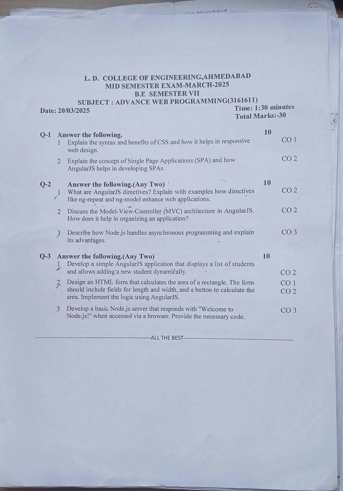
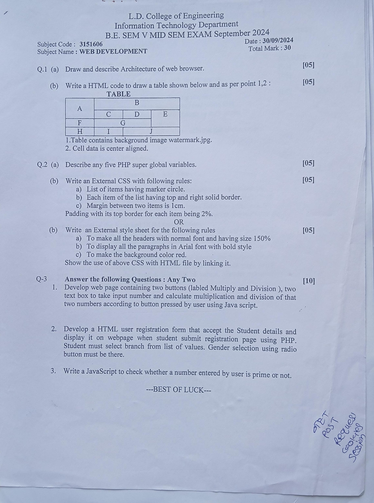
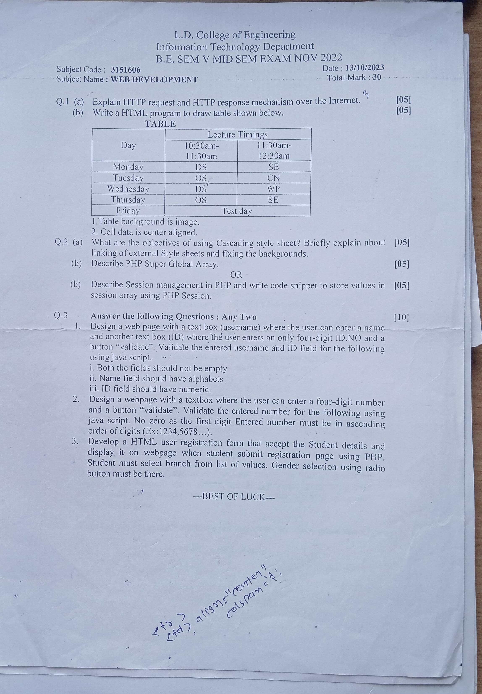
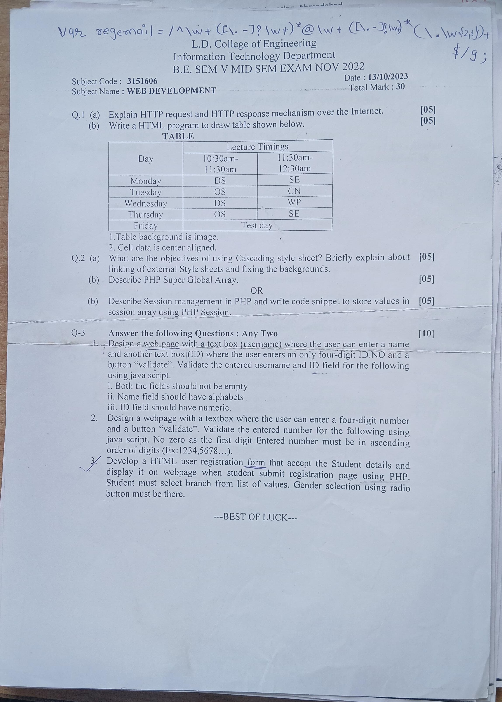
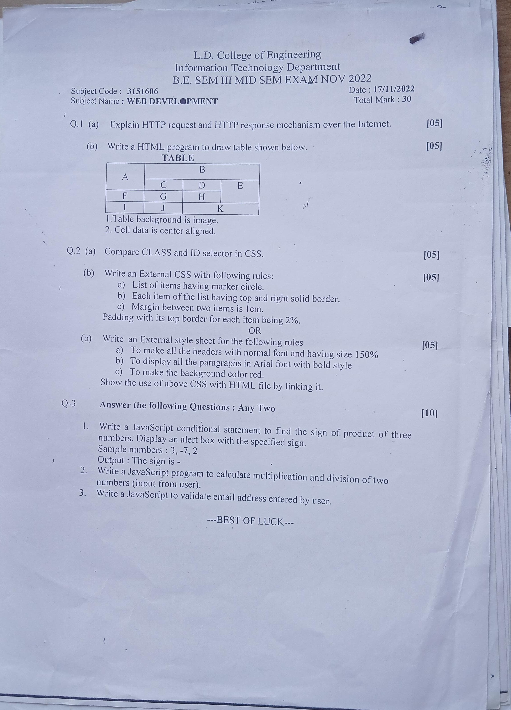

WAD Mid Study Guide
Complete Exam Notes • Architectural Walkthroughs • Previous Year Mid Sem Papers
Introduction to Web Technologies
1. Definition
Web Technologies are a collection of languages, protocols, standards, software, and tools used to create, develop, deliver, and access websites and web applications over the Internet.
They enable seamless communication between a web browser (client) and a web server, allowing users worldwide to access, share, and interact with web-based digital services.
2. Major Components of Web Technologies
Modern web architecture relies on seven core technological pillars working in harmony:
HTML (HyperText Markup Language)
StructureHTML is the standard markup language used to define the fundamental structure and content of a webpage.
- Headings
- Paragraphs
- Hyperlinks
- Images & Media
- Data Tables
- User Forms
- Ordered & Unordered Lists
<h1>Web Development</h1>
<p>Introduction to Web Technologies</p>CSS (Cascading Style Sheets)
PresentationCSS is a stylesheet language used to control the appearance, visual presentation, and spatial layout of HTML webpages.
- Colors & Gradients
- Typography & Fonts
- Backgrounds
- Borders & Shadows
- Spacing (Margin & Padding)
- Page Layout (Flexbox / Grid)
- Responsive Multi-device Design
h1 {
color: blue;
font-size: 30px;
}JavaScript
InteractivityJavaScript is a versatile client-side (and server-side) scripting/programming language used to add interactivity and dynamic behavior to web pages.
- Client-side Form Validation
- Button Click & User Actions
- Real-time Calculations
- Dynamic Content Updates
- DOM Manipulation
- Asynchronous API Communication
alert("Welcome to Web Development!");HTTP / HTTPS
ProtocolHTTP (HyperText Transfer Protocol) is the foundational application protocol used for transferring data between a web client and a web server.
HTTPS (HyperText Transfer Protocol Secure) is the encrypted, secure extension of HTTP that protects communication and data integrity using TLS (Transport Layer Security).
Web Server
Resource ServingA web server is a software and hardware system that listens for and receives incoming requests from network clients, processes them, and delivers the requested web resources (HTML pages, stylesheets, images, scripts) or web services back to the client.
Database
Data StorageA database is an organized, structured collection of data used to persistently store, manage, retrieve, and update information required by web applications.
- User profiles & authentication credentials
- Product catalogs & inventory
- Student academic records & grades
- Financial transactions & audit trails
API (Application Programming Interface)
IntegrationAn API is a defined set of rules and protocols that allows different software applications, subsystems, or external third-party services to securely communicate and exchange data.
3. How Web Technologies Work Together
In a complete end-to-end web transaction, client-side technologies, networking protocols, server hardware, backend business logic, and databases execute a coordinated sequential pipeline:
The web browser uses HTML to construct the document structure, CSS to style the visual presentation, and JavaScript to deliver dynamic behavior and handle user interactions.
4. Importance of Web Technologies
Web technologies are essential in modern software engineering and enterprise infrastructure because they allow developers and organizations to:
- Create websites and web applications: Build accessible, cross-platform applications without requiring platform-specific native installations.
- Design attractive and responsive user interfaces: Ensure applications render comfortably across mobile phones, tablets, laptops, and ultra-wide displays.
- Provide interactive functionality: Deliver real-time user experiences, dynamic event handling, and instant client feedback.
- Exchange data between applications: Enable standardized communication across distributed systems using common protocols and formats (JSON, XML).
- Store and retrieve information using databases: Maintain persistent data integrity, transaction safety, and high-performance querying.
- Provide online services through web browsers: Deliver instant global access to software without manual client upgrades (SaaS model).
- Connect applications with external services through APIs: Integrate payment gateways, mapping services, social identity providers, and cloud services seamlessly.
5. Applications of Web Technologies
Web technologies power mission-critical services across every sector of the modern economy:
Web technologies are a collection of languages, protocols, standards, software, and tools used to create, develop, deliver, and access websites and web applications over the Internet. They enable communication between web browsers and web servers and provide interactive web-based services.
The major components of web technologies include HTML, CSS, JavaScript, HTTP/HTTPS, web servers, databases, and APIs:
- HTML defines the structure and layout of webpages.
- CSS controls presentation, colors, fonts, and responsiveness.
- JavaScript provides interactivity, event handling, and dynamic behavior.
- HTTP/HTTPS enables client-server communication, with HTTPS ensuring TLS encryption.
- Web Servers accept requests and deliver requested web resources.
- Databases store, manage, and retrieve persistent application data.
- APIs allow different software systems to communicate and exchange data.
Thus, web technologies provide the comprehensive foundation for developing modern websites and web applications.
| Component | Core Responsibility |
|---|---|
HTML |
Structure (Skeleton of the webpage) |
CSS |
Style (Presentation, appearance & layout) |
JavaScript |
Behavior (Interactivity & dynamic logic) |
HTTP / HTTPS |
Communication (Client-server data transfer & security) |
Web Server |
Processing & Providing Resources (Request fulfillment) |
Database |
Data Storage (Persistent record management) |
API |
Software Communication (Inter-application integration) |
Evolution of Websites
1. Introduction
The evolution of websites refers to the gradual development of the World Wide Web from simple, static documents containing only text and basic hyperlinks into highly interactive, dynamic, responsive, and intelligent web applications.
Websites have undergone this dramatic transformation primarily driven by rapid advancements across seven critical pillars:
- Faster Internet speed & broadband connectivity
- Advanced modern web browsers
- Maturing standards in HTML, CSS & JavaScript
- High-performance web servers & databases
- Ubiquitous mobile & smartphone devices
- Scalable cloud computing infrastructure
- Modern APIs & component frameworks
- Web 1.0: Static Web (Read-only, information delivery)
- Web 2.0: Dynamic & Interactive Web (Read-write, user-generated content)
- Web 3.0: Semantic & Intelligent Web (Machine-understandable, AI-assisted)
- Modern Web: Responsive, Cloud-based & Application-oriented Web (SaaS)
2. Web 1.0 – The Static Web
Web 1.0 represents the pioneering first generation of the World Wide Web. During this era, websites operated essentially as digital brochures—presenting static information created by site owners for passive human consumption.
Key Characteristics of Web 1.0
- Mostly static web pages
- Content restricted to plain text & images
- Users were purely passive consumers
- Very little or no user interactivity
- Hand-crafted using basic HTML & tables
- Updates made manually by webmasters
- Databases & server scripts were rarely used
- Minimalist, hyper-simple visual design
A standard 1990s company brochure website containing:
- Company name & physical address
- Static "About Us" narrative
- Basic text contact information
- Static product catalog sheet
Limitation: Visitors could read the text, but could not comment, post reviews, create accounts, or interact with the page.
3. Web 2.0 – The Interactive Web
Web 2.0 marked a paradigm shift from static informational silos to interactive, social, and collaborative ecosystems. Users transitioned from passive viewers into active co-creators who generate, publish, share, and edit content in real time.
Key Characteristics of Web 2.0
- Dynamic, database-driven web pages
- High user interaction & engagement
- User-Generated Content (UGC)
- Social networking & profiles
- Collaborative platforms (Wikis, blogs)
- User reviews, ratings & comments
- Interactive web forms & dashboards
- Server-side scripting (PHP, Java, Python)
- Heavy use of JavaScript & AJAX
- Rich, fluid user interfaces (RIAs)
In an online shopping portal, the user executes bidirectional transactions:
- Searches products dynamically
- Adds items to cart without reload
- Authenticates personal account
- Places orders & tracks inventory
- Submits reviews & ratings
- Makes encrypted gateway payments
4. Web 3.0 – The Semantic and Intelligent Web
Web 3.0 focuses on transforming the web into a machine-readable, intelligent, and context-aware web. Rather than simply displaying strings of text, Web 3.0 enables computers to understand the semantics (meaning, context, and relationships) underlying information.
Key Characteristics of Web 3.0
- Semantic understanding of structured data
- Machine-readable metadata (RDF, OWL, JSON-LD)
- High degree of personalization & adaptation
- Artificial Intelligence & Machine Learning integration
- Contextual intelligent search engines
- Decentralized protocols (in distributed web views)
- Seamless inter-service interoperability
- Automated information discovery & reasoning
In traditional keyword search (Web 1.0 / early 2.0), searching for "Apple" returns ambiguous literal matches. In Web 3.0:
Infers the user seeks botanical facts, nutrition, recipes, or farming of Apple (the fruit).
Infers the user seeks stock prices, iPhones, MacBooks, or iOS updates for Apple Inc. (the technology company).
Key takeaway: Web 3.0 is a broad evolutionary paradigm, not restricted to a single framework or company.
5. Modern Web Applications
Today's websites have progressed far beyond static hypermedia pages—they behave as complete, enterprise-grade software applications running directly inside the web browser.
Modern full-stack web applications are constructed using specialized architectural tiers:
Frontend Tier (Client)
- HTML5: Semantic layout structure
- CSS3: Flexbox, Grid, animations & responsive styling
- Modern JavaScript: ES6+, TypeScript
- Frameworks & Libraries: React, Vue, Angular, Svelte
Backend Tier (Server)
- Server Environments: Node.js, Python, Java, Go
- REST & GraphQL APIs: Endpoint management
- Security & Auth: JWT, OAuth2, session controls
- Business Logic: Domain validation & processing
Database Tier (Storage)
- Relational DBs (SQL): PostgreSQL, MySQL
- NoSQL DBs: MongoDB, Cassandra
- In-Memory Caches: Redis, Memcached
- Audit Logs: Transaction journals & backups
Cloud & Supporting Tech
- Cloud Infrastructure: AWS, Google Cloud, Azure
- Data Serialization: JSON, Protocol Buffers
- Security: HTTPS / TLS encryption
- Real-Time: WebSockets, Server-Sent Events
- Responsive Design: Mobile-first media queries
6. Evolution of Website Characteristics Across 4 Stages
The shift in technical capabilities across the evolutionary continuum:
Static Websites
- Mostly read-only text
- Created using basic HTML
- Extremely limited user interaction
- Manual updates by webmasters
Dynamic Websites
- Server-side processing engine
- Relational database integration
- Personalized user accounts
- Dynamic, on-demand content rendering
Interactive Web
- Rich JavaScript & AJAX executions
- Asynchronous updates without page reload
- Real-time user feedback loops
- Extensive user-generated content (UGC)
Modern Web Applications
- Responsive design across all form factors
- Microservices & RESTful / GraphQL APIs
- Cloud-native serverless backends
- Real-time WebSockets & AI-assisted services
7. Comparison of Web Evolution (Web 1.0 vs 2.0 vs 3.0 vs Modern Web)
A side-by-side comparative analysis of the four major web generations:
| Feature | Web 1.0 | Web 2.0 | Web 3.0 | Modern Web |
|---|---|---|---|---|
| Nature | Static | Dynamic | Semantic / Intelligent | Responsive & App-like |
| User Role | Read-only | Read-write | Read-write-understand | Continuous interaction |
| Interaction | Limited / None | Highly interactive | Contextual / Automated | Real-time & Multi-device |
| Core Tech | Basic HTML | JS, AJAX, DBs, PHP | AI/ML, RDF, Metadata | APIs, Cloud, Frameworks |
| Content Source | Website Owner | User-Generated (UGC) | Curated & Connected Data | Cloud & Microservice APIs |
| Primary Focus | Information sharing | Community & Social sharing | Knowledge & Intelligence | Application services & SaaS |
8. Why Did Websites Evolve? (Key Catalysts)
The evolution was propelled by eight pivotal technological and social catalysts:
Increase in Internet Speed
Transition from dial-up to high-speed broadband, 4G/5G, and fiber optics enabled rich video streaming, heavy web apps, and instant asset downloads.
Development of Web Browsers
Modern browser rendering engines (V8, Blink, Gecko) introduced standardized support for HTML5, CSS3, WebAssembly, and hardware acceleration.
Growth of JavaScript
AJAX and modern JS engines eliminated full-page reloads, giving websites the fluid responsiveness previously only found in desktop software.
Database Integration
Robust SQL and NoSQL engines allowed applications to securely store, index, query, and manage millions of concurrent user transactions.
Proliferation of Mobile Devices
The global smartphone revolution mandated responsive web design (RWD) ensuring identical perfection across phone screens, tablets, and desktops.
Cloud Computing
Cloud hosting eliminated physical server bottlenecks, making elastic auto-scaling, global CDNs, and high availability accessible to all developers.
APIs and Web Services
RESTful APIs, GraphQL, and microservices allowed disparate systems to exchange structured data (JSON/XML) effortlessly across the globe.
Rising User Expectations
Modern consumers demand instantaneous page loads (<2s), strict data privacy, intuitive UX, personalization, and zero service downtime.
9. Evolution Pipeline Diagram
10. Case Study: Evolution of an Online News Website
Tracing a single publication through the four web eras illustrates the practical shift:
Static Text Broadcast
Displays fixed daily newspaper articles as static HTML pages. Readers cannot comment, search, or share.
Interactive Social Portal
Readers post comments, upvote opinions, share articles to social media, and search archive databases.
Semantic Relevance
The system infers reader context, understanding topic relationships to automatically suggest deeply relevant content.
Intelligent Real-Time Platform
- Instant live-breaking push notifications
- AI-curated personalized news feeds
- Live streaming & instant live-text updates
- Flawless responsive cross-platform layout
- Syndication via REST & GraphQL APIs
11. Advantages of Modern Websites
Modern web applications offer distinct technical and business benefits over legacy systems:
The evolution of websites refers to the progression of web technologies from simple static information pages into dynamic, highly interactive, and intelligent web applications.
In the early stage, known as Web 1.0 (Static Web), websites were predominantly read-only. Constructed using basic HTML, they offered minimal interaction. Users could only consume static text and images, while all content updates were performed manually by website administrators.
Web 2.0 (Interactive Web) introduced dynamic, read-write platforms centered around User-Generated Content (UGC). Users could create, edit, and share media, write reviews, and collaborate. Technological drivers included server-side scripting, database integration, JavaScript, and AJAX. Examples include social networks, e-commerce, and online banking.
Web 3.0 (Semantic & Intelligent Web) represents the transition toward machine-readable, context-aware information. It emphasizes semantic data structures, automated reasoning, artificial intelligence, machine learning, and deep personalization to understand user intent rather than literal keyword matching.
Modern Web Applications have evolved beyond traditional web pages into complete, browser-delivered software systems. Leveraging HTML5, CSS3, modern JavaScript frameworks, REST/GraphQL APIs, cloud computing, and responsive web design, modern web applications deliver cross-platform, real-time, and AI-powered services.
• Web 1.0: Static and Read-Only
• Web 2.0: Dynamic and Interactive (Read-Write)
• Web 3.0: Semantic and Intelligent (Context-Aware)
• Modern Web: Responsive, API-Driven, Cloud-Based and Application-Oriented
Websites have evolved from static, read-only pages in Web 1.0 to dynamic and interactive platforms in Web 2.0, followed by the semantic and intelligent concepts of Web 3.0. Today's Modern Web Applications utilize HTML5, CSS3, modern JavaScript, databases, APIs, cloud computing, and responsive design to deliver interactive, personalized, and real-time experiences across desktops, tablets, and mobile devices.
Client–Server Architecture
1. Introduction
Client–Server Architecture is a distributed computing model in which the operational processing, workloads, and responsibilities of an application are systematically divided between two major cooperative entities:
1. The Client
The system, program, or device that initiates communication by requesting a specific service, data item, or resource.
2. The Server
The system that continuously listens, receives client requests, executes business logic, queries data, and returns the appropriate response.
In web development, the user's web browser typically acts as the client, while a remote web/application server handles the backend request fulfillment:
2. Formal Definitions
Client–Server Architecture is a network architecture in which client devices or applications request services or resources from a centralized server, and the server processes these requests and returns the appropriate responses.
"Client–Server Architecture is a distributed architecture in which clients request services or resources from servers, and servers process the requests and provide the required responses."
3. Basic Concept: Separation of Responsibilities
The fundamental engineering premise behind client–server computing is the strict separation of concerns:
CLIENT RESPONSIBILITIES
- Initiates network requests
- Gathers & packages user-entered data
- Receives the server's processed response
- Presents and repaints the graphical result for the user
SERVER RESPONSIBILITIES
- Listens & receives incoming client requests
- Executes core business logic and calculations
- Communicates securely with databases and internal services
- Packages and dispatches the final response back to the client
Communication between the two layers takes place across a network governed by standard application protocols such as HTTP or HTTPS.
4. Basic Client–Server Communication (Step-by-Step Lifecycle)
A standard client–server interaction unfolds across eight distinct, sequential stages:
www.example.com or taps a button).
5. Client–Server Architecture Diagram
The fundamental topological hierarchy connecting Client, Web Server, and Database:
6. The Client
A client is any device, hardware terminal, software agent, or application that initiates network communication with a server to request a service or access a resource.
Common Client Implementations
- Web Browsers: Chrome, Firefox, Safari, Edge
- Mobile Applications: Android & iOS native apps
- Desktop Applications: Electron, native C++ / Java software
- Frontend SPAs: React, Vue, Angular applications
- IoT Hardware: Connected sensors, smart meters, embedded controllers
7. Responsibilities of a Client (5 Pillars)
The client layer executes five indispensable responsibilities in the application stack:
User Interface (UI)
Presents graphical controls (login forms, input fields, navigation menus, dashboards) enabling human interaction.
Request Generation
Packages user intentions into standard HTTP requests (e.g., dispatching GET /products to fetch catalog items).
Input Collection
Captures credentials, form inputs, search queries, filter toggles, and payment details from user peripherals.
Preliminary Validation
Validates data formatting locally (e.g., verifying an email format or required password length) before transmission.
Rendering Server Responses
Consumes returned data (HTML markup, CSS rules, JSON records) and transforms it into visual on-screen graphics.
Client-side validation is designed purely to enhance user experience by providing instantaneous feedback without network lag. It can be easily bypassed using developer tools or command-line clients (e.g., cURL, Postman). The server must ALWAYS independently validate all received data before execution.
8. The Server
A server is a high-performance computer system or software application that runs continuously, listens on specified network ports for incoming client requests, executes operations, and returns responses.
Web Servers
Deliver static assets (HTML, CSS, images, JS). Examples: Nginx, Apache HTTP Server, Microsoft IIS.
Application Servers
Host application logic and dynamic workflows. Examples: Node.js, Tomcat, Django, Spring Boot.
Database Servers
Manage persistence, transactions, and indexing. Examples: MySQL, PostgreSQL, MongoDB, Oracle.
API Servers
Expose RESTful / GraphQL endpoints to service multiple heterogeneous clients.
9. Responsibilities of a Server
The server acts as the trusted, authoritative command center of the system:
Accepts concurrent incoming TCP connections, parses HTTP request lines and headers, and routes requests to appropriate controllers.
Executes core application rules. In banking: verifies account states, computes balances, enforces transfer limits, and updates transaction journals.
Constructs and executes structured queries to create, read, update, or delete (CRUD) records safely inside the database tier.
Authentication ("Who are you?"): Validates credentials (passwords, tokens, biometric hashes).
Authorization ("What may you access?"): Verifies access permissions and role-based policies (RBAC).
Enforces input sanitization, CSRF defenses, TLS encryption, rate limiting, session token management, and audit logging.
Constructs HTTP status headers and encodes payloads (JSON, HTML templates, XML, binary files, or error messages) for return transmission.
10. The Database in Client–Server Architecture
While the classical model is described as "client and server," modern applications require persistent, structured storage provided by an enterprise database management system (DBMS).
Why Clients NEVER Communicate Directly with the Database
In standard web architecture, direct client-to-database connections are strictly prohibited:
- Credential Protection: Database credentials remain secret on the server; clients never receive DB passwords.
- Centralized Business Logic: Server enforces validation and auditing before any record is committed.
- Connection Pooling: Prevents millions of client devices from exhausting database connection limits.
11. Complete End-to-End Web Architecture & Data Flow
The unified multi-tier operational pipeline executed for every request:
12–14. HTTP/HTTPS Protocol: Request & Response Anatomy
HTTP (HyperText Transfer Protocol) is the standard stateless application protocol of the web. HTTPS encrypts communications over TLS (Transport Layer Security) to ensure confidentiality and tamper-resistance.
HTTP Request Anatomy
Sent by client to request resources or trigger operations.
GET /products HTTP/1.1
Host: example.com
User-Agent: Mozilla/5.0
Accept: application/json- Method: Verb indicating action (GET, POST...)
- Path/URL: Target endpoint resource
- Headers: Metadata, tokens, content types
- Body: Payload (e.g., JSON in POST/PUT)
HTTP Response Anatomy
Dispatched by server carrying outcome status and payload.
HTTP/1.1 200 OK
Content-Type: application/json
Date: Sun, 13 Sep 2026
{
"name": "Laptop",
"price": 50000
}- Status Code: 3-digit numeric execution status
- Headers: Server metadata, caching rules, cookies
- Body: Requested resource data payload
15. Common HTTP Methods (RESTful Verbs)
HTTP defines standardized request methods indicating the desired operation to perform on a resource:
| Method | Action | Core Purpose | REST Example |
|---|---|---|---|
| GET | Read / Retrieve | Fetches data from the server without modifying state. | GET /students |
| POST | Create / Submit | Submits payload to create a new resource on the server. | POST /students |
| PUT | Complete Replace | Completely overwrites an existing resource with new payload. | PUT /students/101 |
| PATCH | Partial Update | Modifies specific fields of an existing resource. | PATCH /students/101 |
| DELETE | Remove | Deletes the designated resource from the system. | DELETE /students/101 |
16. Common HTTP Status Codes (Quick Reference)
Status codes represent the server's formal evaluation of the client's request:
17. Practical Walkthrough: Authentication & Login System
Tracing an enterprise login transaction across the client–server boundary:
username: user123 & password: ********.POST /login HTTPS request.SELECT * FROM users WHERE username = 'user123'.200 OK with session cookie or JWT payload (or 401 Unauthorized on mismatch).18. Practical Walkthrough: Online Shopping Product Search
GET /products?search=smartphone.SELECT * FROM products WHERE name LIKE '%smartphone%'.19–21. Two-Tier vs. Three-Tier Client–Server Architecture
As systems grow in complexity and security requirements, architectural layering evolves:
Direct communication. Simpler, but suffers from poor scalability and security exposure.
Strict modular isolation. Superior scalability, centralized security, and easy maintenance.
| Dimension | Two-Tier Architecture | Three-Tier Architecture |
|---|---|---|
| Structural Layers | 2 Layers (Client ↔ Server) | 3 Layers (Client ↔ App Server ↔ Database) |
| Complexity | Simple to design and deploy | More complex initial configuration |
| Separation of Concerns | Limited; client often holds business logic | Complete separation of UI, logic, and data |
| Security Posture | Lower (client may talk directly to DB) | High (database completely hidden behind application server) |
| Scalability | Limited (connection bottlenecks) | High (tiers can be scaled independently on the cloud) |
| Ideal Use Case | Small internal tools, LAN applications | Modern enterprise web apps, SaaS, e-commerce, banking |
22. Core Characteristics of Client–Server Architecture
Separation of Concerns
Clients specialize in rendering and UX; servers specialize in processing, business rules, and storage.
Centralized Data Management
Enterprise data is maintained in authoritative databases rather than scattered across user hard drives.
Resource Sharing
High-end hardware, processing pipelines, and datasets are shared efficiently among thousands of concurrent clients.
Network-Centric Operation
Communication is strictly decoupled and mediated across standardized networking protocols (TCP/IP, HTTP).
Modular Scalability
Server instances and database clusters can be horizontally scaled without modifying client software.
Centralized Security Control
Enables single-point enforcement of authentication, auditing, firewalls, and encryption keys.
Concurrent Access
Thread pools and asynchronous event loops enable a single server cluster to handle tens of thousands of simultaneous users.
23–24. Advantages & Disadvantages (Trade-off Analysis)
Key Advantages
- Centralized Management: Logic and data updates happen centrally on the server.
- Enhanced Security: Sensitive databases and logic never leave the secure server perimeter.
- Seamless Maintenance: Server patches apply instantly without user reinstalls.
- Resource Efficiency: Shared compute and storage optimize infrastructure costs.
- Elastic Scalability: Independent scaling of frontend and backend tiers.
- Data Consistency: Single source of truth prevents conflicting record versions.
- Streamlined Backups: Routine database snapshots protect all users at once.
- Multi-Client Support: A single server API powers web, iOS, Android, and IoT.
Key Disadvantages
- Server Dependency: Clients become inoperable if the host server goes offline.
- Network Dependency: Requires stable network connectivity to function.
- Single Point of Failure: Unclustered servers halt all services during outages.
- High Infrastructure Cost: Enterprise servers, load balancers, and licenses are costly.
- Target for Cyberattacks: Central servers attract DDoS and data breach attempts.
- Network Latency: Round-trip delays across continents can slow down perceived UX.
- Bottleneck Risks: Poorly architected server queries degrade under spike loads.
25. Client–Server Architecture in Banking & Financial Auditing
Nowhere is client–server separation more critical than in banking and financial audit systems:
Banking Transaction Lifecycle
Mission-Critical Server Responsibilities in Finance: Multi-factor authentication (MFA), real-time fraud scoring algorithms, cryptographic validation of transfer amounts, transaction ledger reconciliation, and tamper-evident audit logging.
26–27. Structural Comparisons
Client–Server vs. Peer-to-Peer (P2P)
- Client–Server: Asymmetric roles; centralized server serves passive clients; simple governance; predominant in enterprise web apps.
- P2P: Symmetric nodes (servents); every peer acts simultaneously as client and server; decentralized; used in file sharing (BitTorrent, blockchain).
Client–Server vs. Web Application Architecture
Client–server is the broad umbrella computing model. A web application is a specific implementation utilizing Web Browsers (Clients), HTTP/HTTPS (Protocols), and Web/Application Servers (Host):
28. Key Terminology Glossary
29–30. Key Differences Between Client and Server
| Feature | Client (Frontend) | Server (Backend) |
|---|---|---|
| Primary Function | Initiates requests & renders UI | Processes requests & executes logic |
| User Interaction | Directly interacts with human user | Operates behind the scenes headlessly |
| Data Storage | Temporary memory / LocalStorage | Persistent enterprise database management |
| Security Role | Untrusted execution environment | Trusted security & access control authority |
| Core Technologies | HTML, CSS, JavaScript, Mobile SDKs | Node.js, Python, Java, Go, SQL, Nginx |
Every byte received from a client device must be treated as hostile until cryptographically verified and validated on the server. Clients can be modified, requests can be tampered with via proxies, and headers can be spoofed. Therefore, critical validation, authorization, and sanitization must ALWAYS be executed on the server.
Client–Server Architecture is a distributed computing architecture in which application responsibilities are partitioned between service requesters (clients) and service providers (servers). The client initiates a request across a network, and the server receives, computes, validates, queries data, and returns an appropriate response.
In web applications, the client is typically a web browser executing HTML, CSS, and JavaScript, while the server is a web/application server running backend runtimes (e.g., Node.js, Python, Apache). Communication is conducted via HTTP/HTTPS.
Key Component Roles:
- Client: Provides the graphical user interface (GUI), collects user inputs, performs initial UX validation, generates formatted HTTP requests, and repaints returned data on screen.
- Server: Ingests requests, validates inputs, executes business logic, manages authentication/authorization, and orchestrates database transactions.
- Database: Persistently stores and indexes application data (users, accounts, products) and never communicates directly with clients.
Lifecycle Flow:
Client → HTTP Request → Server → Query → Database → Records → Server → HTTP Response → Client.
Modern web systems generally employ a Three-Tier Architecture comprising a Presentation Layer (UI/Browser), an Application/Logic Layer (Server rules and APIs), and a Data Layer (DBMS). This separation offers substantial benefits, including centralized management, robust security ("Never trust the client"), modular scalability, resource sharing, and cross-platform multi-client support.
Client–Server Architecture is a distributed network model in which client applications request services or resources from a centralized server, which processes the request, executes business logic and database queries, and returns the response. In web development, browsers serve as clients and web/application servers act as servers, communicating over HTTP or HTTPS.
Frontend, Backend and Database — Overview
1. Introduction
Every modern full-stack web application is systematically partitioned into three foundational architectural tiers: Frontend, Backend, and Database. These three tiers work in continuous coordination to deliver a seamless, secure user experience.
1. Frontend Tier
Client-Side LayerThe visual presentation layer running in the user's web browser that humans directly perceive and interact with.
2. Backend Tier
Server-Side LayerThe processing brain running on remote servers that executes business rules, validates requests, and controls data access.
3. Database Tier
Data Persistence LayerThe organized storage system responsible for securely housing, indexing, retrieving, and updating persistent application state.
2. The Frontend (Client-Side Tier)
The frontend is the client-side part of a web application that users directly see, navigate, and interact with through a web browser. It is primarily responsible for the graphical user interface (GUI) and visual presentation.
Core Technologies & Popular Frameworks
Industry Frameworks & Libraries:
UI & UX Design
Renders visual aesthetics, color palettes, typography, spacing, and brand identity.
Content Presentation
Displays articles, product catalogs, tables, videos, and graphical dashboards.
User Input Collection
Gathers keyboard inputs, mouse clicks, file uploads, search terms, and touch gestures.
Interaction Handling
Executes instantaneous click handlers, modal dialogs, animations, and tooltips.
Preliminary Validation
Performs instant client-side checks (e.g., verifying email formats or non-empty fields).
Request Dispatch
Encodes user actions into asynchronous HTTP/API requests (using Fetch / Axios) to the backend.
Dynamic DOM Repaint
Receives backend JSON responses and dynamically updates the DOM without full reloads.
Multi-Device Responsiveness
Adapts fluidly across mobile smartphones, tablets, laptops, and 4K ultra-wide monitors.
When browsing an e-commerce platform, the frontend is responsible for rendering the high-resolution product gallery, pricing badges, interactive search autocomplete bar, "Add to Cart" buttons, and checkout forms.
3. The Backend (Server-Side Tier)
The backend is the server-side component of a web application that processes client requests, implements business logic, executes computations, enforces security policies, and communicates with databases. It runs headlessly on remote servers and is never directly visible to users.
Backend Languages & Web Frameworks
Enterprise Frameworks:
Accepts HTTP/HTTPS requests, parses query parameters/headers, and routes traffic to matching controllers.
Applies application domain rules (e.g., calculating tax rates, evaluating discounts, checking account balances).
Sanitizes and re-verifies every incoming field to prevent SQL injection, XSS, and corrupted records.
Authenticates passwords (bcrypt/argon2), signs JWT access tokens, and validates role permissions.
Maintains database connection pools, constructs queries, and oversees transactional commits or rollbacks.
Exposes structured RESTful or GraphQL endpoints that allow frontends and third-party integrations to communicate.
POST /login payload.200 OK response back to Frontend.4. The Database (Persistence Tier)
A database is an organized, structured software system engineered to reliably store, index, manage, retrieve, and update application data across power cycles and application restarts.
Databases store essential enterprise state: user profiles, product catalogs, customer orders, banking ledgers, student grades, and audit trail logs.
A. Relational Databases (SQL)
Organizes data into structured tables with rows (records) and columns (attributes) adhering to strict schemas and ACID transaction guarantees.
B. NoSQL Databases
Utilizes non-tabular, flexible schema data models such as JSON documents, key-value stores, graph topologies, and wide-column structures.
Core Responsibilities of the Database Tier
- Create & Store: Persisting records safely to disk/SSD
- Read & Retrieve: Rapid querying with B-Tree indexes
- Update: Modifying existing records while preventing race conditions
- Delete: Purging or soft-deleting obsolete data
- Data Consistency: Enforcing foreign keys & constraints
- Access Control: Restricting database privileges to backend roles
5. How Frontend, Backend and Database Work Together (8 Steps)
Walking through an online shopping transaction to observe the coordinated multi-tier handoff:
GET /api/products request to the backend.SELECT id, name, price, stock FROM products WHERE active = 1.200 OK headers and transmits it to the client.6–7. Key Differences & Comparison Table
| Component | Execution Realm | Visibility to User | Main Purpose | Standard Technologies |
|---|---|---|---|---|
| Frontend | Client-side (Browser) | Directly Visible | User interface, visual styling & interaction | HTML5, CSS3, JavaScript, React, Vue |
| Backend | Server-side (Remote Server) | Hidden / Headless | Business rules, request routing, APIs & security | Node.js, Python, Java, PHP, Express, Django |
| Database | Data Storage Tier | Completely Isolated | Persistent record storage, indexing & queries | MySQL, PostgreSQL, MongoDB, Redis |
8. Enterprise Security: The Controlled Intermediary
In secure web systems, the frontend must NEVER communicate directly with the database. The backend acts as a mandatory, trusted security perimeter enforcing:
- Strict Authentication & Token Validation
- Role-Based Access Control (RBAC)
- Input Sanitization & Prepared Statements
- Rate Limiting & DDoS Shielding
9. Practical Case Study: Student Management System
Examining tier responsibilities in an educational administration portal:
Frontend Role
- Student admission & registration form
- Sortable student grade listing table
- Real-time search & filter interface
- Validation of required field inputs
Backend Role
- Validates enrollment eligibility
- Calculates GPAs and percentage averages
- Exposes
/api/studentsREST endpoints - Authenticates teacher and student logins
Database Role
student_id(Primary Key)full_name,email,course- Academic marks & semester transcripts
- Course enrollment relationships
A modern web application is architecturally divided into three fundamental layers: Frontend, Backend, and Database.
1. Frontend (Client-Side Tier):
The frontend is the presentation layer that users directly view and interact with in their web browser. Developed using HTML, CSS, and JavaScript (along with frameworks such as React, Angular, or Vue), it handles user interface design, input capture, event handling, and dynamic DOM rendering based on server responses.
2. Backend (Server-Side Tier):
The backend is the processing engine running headlessly on servers. Built with runtimes and frameworks like Node.js, Python/Django, or Java/Spring Boot, it processes incoming HTTP requests, enforces business logic, performs authoritative validation, verifies authentication and authorization, exposes APIs, and coordinates database operations.
3. Database (Persistence Tier):
The database is the persistent storage layer responsible for organizing, indexing, retrieving, and updating application records (such as user accounts, transactions, and catalogs). Databases are categorized into Relational SQL (e.g., PostgreSQL, MySQL) and NoSQL (e.g., MongoDB, Redis).
Frontend ↔ Backend ↔ DatabaseThe frontend never accesses the database directly; the backend acts as a secure intermediary. Thus, the frontend handles presentation and interaction, the backend handles processing and logic, and the database handles persistent data storage.
Role of Web Technologies in Banking and Finance
1. Introduction
Web technologies play a foundational and transformative role in modern banking and financial services by empowering customers, institutional investors, and banks to access, process, exchange, and manage high-value financial assets through secure web-based platforms.
Financial institutions orchestrate client-side technologies (HTML5, CSS3, JavaScript), hardened web servers, ACID-compliant databases, secure REST/SOAP APIs, and cryptographic protocols (HTTPS/TLS) to deliver high-availability financial services.
2. Architectural Role: The Secure Digital Conduit
The primary role of web technologies in banking is providing a strictly controlled, tamper-resistant, and high-performance communication platform connecting retail customers, institutional clients, core banking systems (CBS), and central clearing houses.
3. Online & Internet Banking Capabilities
Web technologies eliminate physical branch bottlenecks by delivering comprehensive banking capabilities directly through browser viewports:
Account Balances
Instantaneous ledger balance queries across savings, checking, and fixed deposit accounts.
Transaction History
Searchable, filterable audit records of debits, credits, interest, and card purchases.
E-Statements
On-demand generation and encrypted PDF downloads of monthly and annual financial statements.
Fund Remittances
Domestic (NEFT/RTGS/IMPS/ACH) and international (SWIFT) electronic wire transfers.
Utility Bill Payments
Direct debit integration for utilities, credit cards, taxes, and recurring subscriptions.
Beneficiary Management
Adding, validating, and managing verified payee bank details with cooling periods.
4. Online Fund Transfer: 8-Step Transaction Flow
An electronic fund transfer executes through a rigorous 8-stage verification pipeline:
5. Secure Communication: The Role of HTTPS
In financial web applications, raw HTTP is strictly prohibited. HTTPS employs Transport Layer Security (TLS) to construct an end-to-end encrypted cryptographic tunnel between the user's browser and the bank's servers.
6–7. Authentication vs. Authorization in Finance
AUTHENTICATION ("Who are you?")
The technical verification of the claimant's identity before granting any system access:
- Knowledge Factor: Username, password, secret PIN
- Possession Factor: One-Time Password (OTP) via SMS, hardware token, email code
- Inherence Factor: Biometrics (Face ID, fingerprint scan)
- Multi-Factor Auth (MFA): Mandatory combining of 2+ distinct factors
AUTHORIZATION ("What can you do?")
Enforcing fine-grained access control policies once identity is verified:
- Retail Customer: Permitted to view only their own accounts and transfer within daily caps.
- Bank Teller: Authorized to post customer-assisted cash deposits.
- Branch Manager: Authorized to override limits and approve high-value commercial wire transfers.
- Financial Auditor: Read-only access to transaction logs without edit privileges.
8–9. Database Management & Real-Time Transaction Processing
Banking platforms process millions of concurrent transactions. To maintain institutional trust, financial web architectures demand:
ACID Database Integrity
- Atomicity: Transactions execute completely or abort cleanly (no half-transfers).
- Consistency: Debit from Account A strictly equals credit to Account B.
- Isolation: Concurrent transactions do not interfere with each other.
- Durability: Committed transaction logs survive sudden power failures.
Near Real-Time Visibility
Web technologies eliminate delayed end-of-day batch processing for consumers. Upon transfer completion, client-side web applications instantly reflect:
- Instant balance adjustment
- Unique reference number (UTR)
- Precise ISO-8601 audit timestamp
10–11. Online Payments & Financial API Ecosystem
E-commerce transactions rely on standardized web protocols mediating communication across four distinct stakeholders:
The Role of APIs (Application Programming Interfaces) in Finance
Banking APIs (REST/JSON and Open Banking standards) expose secure, programmatic gateways that allow external systems to integrate:
12–14. Self-Service, Financial Portals & 24×7 Availability
FinTech Verticals
Web applications power specialized sectors: stock trading (Zerodha, Robinhood), mutual fund portals, credit card portals, and tax filing software.
Customer Self-Service
Customers self-serve account statements, card block/unblock, limit changes, and address updates without human branch teller intervention.
24×7 Omnipresence
Eliminates banking hour constraints ("10 AM – 4 PM"). Customers manage finances anytime from desktop workstations, tablets, or smartphones.
15–16. Responsive Design & Dual Data Validation
Responsive Web Design (RWD)
Financial dashboards present dense numerical datasets. Utilizing CSS Flexbox, CSS Grid, and media queries ensures tabular financial data remains legible across phone viewports and multi-monitor trading terminals alike.
Dual-Layer Validation Model
- Client-Side (JavaScript): Instant UX feedback (checks empty inputs, account number lengths, currency formatting).
- Server-Side (Backend Logic): Authoritative validation (verifies account existence, checks sufficient available balance, enforces limits).
17–20. Fraud Monitoring, Alerts, Paperless E-Statements & Cloud
AI Fraud Detection
Monitors suspicious indicators: anomalous geographical logins, rapid brute-force attempts, and abnormal transaction amounts.
Multi-Channel Alerts
Instantaneous push notifications, SMS, and email alerts triggered upon every debit, failed login, or profile modification.
Digital Green Reporting
Paperless digital generation and archiving of monthly bank statements, loan amortizations, and tax withholding certificates.
Elastic Cloud Infrastructure
Hybrid cloud hosting delivering auto-scaling compute, regional disaster recovery, and 99.999% uptime compliance.
21–22. Institutional Benefits & Security Challenges
10 Institutional Benefits
- Global Convenience: 24×7 remote service access.
- Transaction Velocity: Instantaneous wire settlement.
- Ubiquitous Accessibility: Multi-device support.
- Process Automation: Elimination of manual ledger entry.
- Operational Cost Reduction: Decreased branch footprint.
- Elevated UX: Intuitive, interactive dashboards.
- Real-Time Transparency: Instant ledger visibility.
- Ecosystem Integration: Open Banking API connectivity.
- Elastic Scalability: Servicing millions concurrently.
- Structured Governance: Auditable database records.
Security Threat Vectors & Defenses
Primary Web Threat Vectors in Finance:
- Phishing & credential harvesting portals
- Session hijacking & Man-in-the-Middle attacks
- SQL Injection (SQLi) & Cross-Site Scripting (XSS)
- Cross-Site Request Forgery (CSRF) on fund transfers
- API scraping & brute-force credential stuffing
Mandatory Countermeasures: Strict HTTPS/TLS 1.3, MFA, prepared SQL statements, CSP headers, rate-limiting, and 24×7 SOC telemetry.
23–24. Technology Role Matrix in Financial Systems
| Technology Component | Specific Banking Role | Real-World Financial Implementation |
|---|---|---|
HTML5 |
Semantic Document Structure | Login forms, statement tables, KYC document upload fields |
CSS3 |
Visual Layout & Responsiveness | Financial dashboards, color-coded credit/debit badges, responsive tables |
JavaScript |
Dynamic Interaction & Client Logic | Input masks (credit card spacing), dynamic loan EMI calculators, charts |
HTTPS / TLS |
Encrypted Wire Communication | Securing transfer payloads and credentials from eavesdropping |
Backend Services |
Authoritative Financial Logic | Transaction validation, interest calculation, fraud scoring, auth tokens |
Databases |
Persistent ACID Ledger | Core banking accounts, transactional journal records, balance ledgers |
APIs |
Inter-System Integration | Connecting payment gateways, credit rating agencies, and card networks |
25–26. End-to-End Financial Execution Flows
Checking Account Balance
GET /api/accounts/balance via HTTPS.Executing Online Fund Transfer
POST /api/transfers dispatched via TLS.27. Why Web Technologies Are Fundamental to Modern Finance
Web technologies have fundamentally transformed finance from physical branch-dependent paperwork into an instantaneous, borderless digital ecosystem:
Web technologies form the technical foundation of modern digital banking and financial services by enabling secure, rapid, and continuous access to financial information, electronic transactions, and investment services through web-based platforms.
1. Core Services Powered by Web Technologies:
Web technologies deliver essential financial capabilities including internet banking, online account management, electronic fund transfers (NEFT, RTGS, IMPS, ACH, SWIFT), e-commerce payment gateway integration, loan origination, digital investment platforms, and paperless e-statements.
2. Architectural Roles & Technologies:
- Frontend (HTML, CSS, JavaScript): Constructs the user interface, renders account dashboards, captures user input, and provides responsive ergonomics across devices.
- Secure Communication (HTTPS/TLS): Protects communications between browser and server against eavesdropping, interception, and tampering.
- Authentication & Authorization: Implements multi-factor authentication (passwords, OTPs, biometrics) and role-based access control (RBAC) to enforce institutional security.
- Backend Systems: Validates transactions, applies business rules, orchestrates fraud scoring, and enforces ACID consistency.
- Databases & CBS: Houses persistent, tamper-evident financial ledgers, customer profiles, and audit trails.
- APIs: Connects core banking systems with external payment gateways, merchant portals, and credit rating bureaus.
3. Key Benefits:
Web technologies eliminate physical branch constraints, providing 24×7 accessibility, instantaneous transaction speeds, lower operational overhead, automated record-keeping, and scalable multi-device customer self-service.
4. Security Imperatives:
Because financial systems represent high-value targets, institutions must defend against phishing, credential theft, session hijacking, SQL injection, and CSRF through defense-in-depth: mandatory HTTPS, server-side validation ("never trust the client"), rate limiting, encryption at rest and in transit, and continuous security telemetry.
Web technologies play an indispensable role in banking and finance by enabling online banking, electronic fund transfers, payment processing, and account self-service:
- Presentation Layer: HTML, CSS, and JavaScript provide interactive, responsive user interfaces and dashboards.
- Processing & Logic: Backend application servers enforce financial business logic, transaction validation, and fraud controls.
- Data Management: ACID-compliant databases securely store ledgers, customer records, and audit logs.
- Security & Encryption: HTTPS/TLS, multi-factor authentication (MFA), and role authorization safeguard sensitive financial data.
- Integration: Open APIs connect banking servers with merchant gateways, credit bureaus, and external financial networks.
Static vs. Dynamic Websites
1. Static Websites
A static website consists of fixed, pre-built web pages whose content remains identical for all users and visitors unless a web developer manually edits the underlying source code files on the server.
Core Characteristics of Static Websites
- Technology Stack: Primarily HTML5 and CSS3, with basic client-side JavaScript.
- Pre-compiled Assets: Content is pre-written and stored as flat files on the web server disk.
- No Database Dependency: Operates entirely without database queries or server-side scripting.
- High Performance: Delivered at near-instantaneous speeds directly from disk caches or CDNs.
- Ideal Workloads: Suitable for websites with relatively permanent, fixed informational content.
2. Dynamic Websites
A dynamic website generates, personalizes, and updates its content on-the-fly based on user requests, user input, session states, stored database records, or external API data feeds.
Core Characteristics of Dynamic Websites
- Full-Stack Architecture: Blends frontend interfaces with backend server runtimes (Node.js, Python, Java, PHP).
- Database Driven: Actively queries relational (SQL) or NoSQL databases for real-time record retrieval.
- Automated Updates: Content changes immediately when records update in the database—without touching HTML files.
- Deep Personalization: Generates distinct content tailored specifically to the authenticated user profile.
- Infrastructure Requirements: Demands robust web and application server environments.
3. How They Work: Architectural Lifecycle Comparison
Contrasting the request-response processing pipeline between static file serving and dynamic page generation:
Static Website Flow (Direct File Delivery)
.html file on disk.Dynamic Website Flow (On-the-Fly Processing)
4. Key Differences (Static vs. Dynamic Comparison)
A detailed dimension-by-dimension contrast between static and dynamic paradigms:
| Feature | Static Website | Dynamic Website |
|---|---|---|
| Content Nature | Fixed & identical for all visitors | Changes dynamically based on user/state |
| Processing Model | Exclusively client-side (in browser) | Client-side rendering + server-side computation |
| Database Required? | No database required | Commonly requires a database (SQL / NoSQL) |
| Backend Runtime? | No backend scripting needed | Requires server-side runtime (Node.js, Python, Java) |
| User Interaction | Limited (read-only, navigation links) | High (forms, logins, live search, comments, cart) |
| Content Updates | Manual (developer must edit file on server) | Automatic (updated via CMS or database commits) |
| Development Effort | Simpler, faster to code and deploy | More complex (requires full-stack engineering) |
| Page Delivery Speed | Extremely fast (cached file delivery) | Depends on server latency & database query speed |
| Maintenance & Hosting | Low cost, easy maintenance, minimal attack surface | Higher server costs, active maintenance, patching |
| Representative Examples | Portfolios, landing pages, documentation | Online banking, e-commerce, social media, portals |
5–6. Advantages & Disadvantages (Trade-off Analysis)
Comparative Advantages
- Straightforward and fast to build and launch
- Blazing-fast load times (servable directly via CDNs)
- Negligible hosting costs (GitHub Pages, Netlify)
- Virtually zero database vulnerabilities (SQLi impossible)
- Deep personalization for logged-in accounts
- Seamless database integration for massive record sets
- Non-technical staff can update content via CMS
- Scales to enterprise software and SaaS applications
Comparative Limitations
- Severely limited functionality and interaction
- Content changes mandate manual HTML/CSS file edits
- Cannot natively support user logins, cart, or transactions
- Higher architectural complexity to architect and test
- Demands ongoing database maintenance and backups
- Requires security vigilance (SQLi, CSRF, XSS defenses)
- Higher hosting resource and server hardware costs
7. Concrete Case Study: College Information Site vs. Student Portal
Observing the distinction inside an academic university domain:
College Brochure Website
Content Rendered: College history, campus photos, list of accredited degrees, faculty biographies, and contact details.
courses.html and edit the number manually.
College Student Portal
Content Rendered: Authenticated student profile, live attendance percentage, semester grade transcripts, exam timetable, and fee receipts.
The fundamental difference between static and dynamic websites lies in how content is generated, stored, and served to the user:
1. Static Websites:
A static website consists of pre-built, fixed web pages whose content remains identical for all visitors. Built primarily with HTML and CSS (and optional client-side JavaScript), it does not require server-side computing or database interaction. Web servers deliver pre-existing files directly from disk storage. They are simple, cost-effective, blazing fast, and ideal for informational portfolios, brochure pages, and landing sites.
2. Dynamic Websites:
A dynamic website generates or updates content on-the-fly based on user requests, inputs, session authentication, and database records. It combines frontend markup with backend application logic (Node.js, Python, Java) and database management systems (MySQL, MongoDB). Dynamic websites deliver personalized experiences, support user accounts, handle secure transactions, and allow automatic updates via content management interfaces. Examples include internet banking, e-commerce, and social networks.
• Static Website = Fixed Content + Pre-built Files + Simple Structure
• Dynamic Website = On-Demand Generation + Backend Logic + Database
Module 1: Previous Year Mid Question Paper Status & Exam Predictions
The previously analyzed Previous year mid question paper does NOT contain a clearly direct question from these six Module 1 topics.
This means you should NOT memorize the old HTTP or Browser Architecture questions as Module 1 questions.
Exam Predictions from Module 1
Since direct repetition from previous year mid question papers is absent for these exact current-syllabus topics, the most likely questions in the examination are conceptual questions:
Core Architecture & Mechanism Questions
Supporting Conceptual & Comparative Questions
Module 1 Previous Year Mid Question Paper Status
Historical examination paper trend mapping against the current prescribed syllabus:
| Topic | Previous Year Mid Paper Evidence |
|---|---|
| Introduction to Web Technologies | No direct question |
| Evolution of Websites | No direct question |
| Client–Server Architecture | No direct question |
| Frontend / Backend / Database Overview | No direct question |
| Banking and Finance | No direct question |
| Static vs Dynamic Websites | No direct question |
Therefore, Module 1 is primarily a CURRENT-SYLLABUS / CONCEPTUAL-PREPARATION module rather than a strong previous year mid question paper repetition module.
The safest strategy is to know the six topics conceptually and be able to answer definition, explanation, comparison, and diagram-based questions.
Introduction to HTML and CSS
1. Overview & The Twin Pillars of Frontend
Every website or web application on the Internet relies on the fundamental partnership between two core client-side technologies: HTML (HyperText Markup Language) and CSS (Cascading Style Sheets).
Modern frontend engineering is founded on the principle of Separation of Concerns:
HTML → Structure & Content
Acts as the architectural blueprint. It organizes, structures, and semantically defines the content elements present on the page.
CSS → Design & Presentation
Acts as the visual skin & interior styling. It governs layout geometry, typography, color palettes, spacing, and cross-device responsiveness.
2. HTML (HyperText Markup Language)
HTML (HyperText Markup Language) is the standard markup language used to create and structure web pages. It defines the content and structural hierarchy of a webpage using elements and tags.
HTML is not a programming language; it is a declarative markup language. It instructs web browsers how to arrange, group, and present text, multimedia, and user input fields through nested tags.
Core Content & Structural Elements Defined by HTML
BlueprintHTML outlines the raw information and interactive targets on a page through standard semantic tags:
-
Headings
<h1> – <h6>Document titles and hierarchical subheadings -
Paragraphs
<p>Blocks of body copy and descriptive text -
Hyperlinks
<a href="...">Inter-page navigation and external web references -
Images & Media
<img>,<video>Visual and auditory media assets -
Data Tables
<table>,<tr>,<td>Structured tabular records and matrices -
User Forms
<form>,<input>Interactive inputs, buttons, and form submissions
3. CSS (Cascading Style Sheets)
CSS (Cascading Style Sheets) is a stylesheet language used to style and design HTML webpages. It controls the visual presentation, color palettes, typography, spacing, borders, layouts, and responsive behavior across multiple screen sizes.
Without CSS, all web pages would appear as plain, left-aligned, unformatted black text on white backgrounds. CSS transforms raw markup into engaging, aesthetically pleasing, and branded digital experiences.
Key Visual Aspects Governed by CSS
Styling-
Colors & GradientsText colors, accent highlights, and rich background fills
-
Fonts & TypographyTypefaces, font weights, line heights, and letter spacing
-
Spacing & Box ModelInternal padding, external margins, and content dimensions
-
Borders & ShadowsRounded corners (border-radius), outlines, and elevations
-
Layout SystemsCSS Grid and Flexbox for multi-column alignment and positioning
-
ResponsivenessMedia queries adapting UI layouts to mobiles, tablets, and desktops
4. HTML + CSS: The Architectural Analogy
To intuitively comprehend how HTML and CSS collaborate, consider the classic Building Construction Analogy:
5. Code Demonstration: HTML & CSS in Action
Consider the fundamental example of creating and styling a primary document heading:
<h1>Hello World</h1>h1 {
color: blue;
}
1. Role of HTML: The <h1>Hello World</h1> tag creates the heading element on the page. It declares to the browser: "This piece of text represents the top-level title of the document."
2. Role of CSS: The CSS rule h1 { color: blue; } targets all <h1> elements on the page and modifies their visual presentation, instructing the browser's render engine to paint the text glyphs in blue.
Conclusion: HTML creates the heading node, while CSS alters its appearance.
6. Comprehensive Comparison: HTML vs CSS
A high-yield summary table distinguishing the roles, mechanics, and characteristics of HTML and CSS:
| Feature / Dimension | HTML (HyperText Markup Language) | CSS (Cascading Style Sheets) |
|---|---|---|
| Full Form | HyperText Markup Language | Cascading Style Sheets |
| Primary Purpose | Defines structure and semantic content | Controls visual style and layout presentation |
| Core Building Blocks | Elements, tags (<tag>...</tag>), and attributes |
Selectors, properties, values, and declaration blocks |
| File Extension | .html or .htm |
.css |
| Browser Processing | Parsed into the DOM (Document Object Model) tree | Parsed into the CSSOM (CSS Object Model) tree |
| Physical Analogy | Skeleton, framing, and load-bearing walls | Skin, paint, clothing, and interior lighting |
| Standalone Functionality | Can exist independently (renders raw default unstyled content) | Cannot function alone (requires HTML elements to style) |
| Typical Examples | <h1>, <p>, <table>, <form>, <a> |
color, font-size, margin, display: flex |
7. Key Point & Exam-Ready Summary
HTML provides the structure of a webpage, whereas CSS provides its visual presentation.
"HTML is the standard markup language that structures web content using tags, while CSS is a stylesheet language that governs the visual presentation, color, layout, and styling of that HTML content."
"In modern web development, structure and style are strictly decoupled: HTML establishes the DOM hierarchy, while CSS decorates the render tree."
Structure of HTML Documents
1. Overview & Standard Document Architecture
An HTML document follows a standardized, hierarchical structure that informs the web browser how to parse, interpret, render, and display webpage content accurately across platforms.
Every compliant webpage is organized as a nested node tree starting with the document type declaration and branching strictly into two core subdivisions: the head (metadata & resources) and the body (visible display canvas).
2. Basic HTML Document Structure (The Canonical Template)
The foundational template required for every valid modern HTML5 webpage:
<!DOCTYPE html>
<html>
<head>
<title>My Web Page</title>
</head>
<body>
<h1>Welcome</h1>
<p>This is my webpage.</p>
</body>
</html>3. Visual Document Tree Hierarchy (DOM Architecture)
How the browser parses the markup and constructs the Document Object Model (DOM) tree:
<!DOCTYPE html> — Standard HTML5 Mode Declaration
<html> — Top-Level Document Root Wrapper
<head> (Non-Visible Metadata)
<title>— Sets Browser Tab Title<meta>— Character Encoding & Viewport<link>— Connects External Stylesheets (CSS)
<body> (Visible Renderable Canvas)
<h1>— Primary Page Heading (Welcome)<p>— Descriptive Body Text<img>,<a>,<form>— Interactive Page Elements
4. In-Depth Breakdown of the 5 Main Structural Components
Every standard HTML document is composed of five core structural building blocks:
-
1.
<!DOCTYPE html>PreambleDeclares that the document is written in HTML5. It must always be the very first line of code, ensuring the browser renders the page in standards-compliant mode rather than legacy "quirks mode". -
2.
<html>Root ElementThe root element that acts as the container enclosing all other HTML elements on the webpage. Nothing belongs outside of<html>except the DOCTYPE declaration. -
3.
<head>Metadata HubContains non-rendered information and resources about the webpage. Common child tags include:<title>→ Sets browser tab title.<meta>→ Character encoding (UTF-8), viewport, description.<link>→ Connects external CSS files.
-
4.
<title>Tab TitleSpecifies the title displayed on the browser tab, browser history, bookmarks, and search engine results pages (SERPs). It is placed strictly inside the<head>section. -
5.
<body>Visible CanvasContains all visible content rendered directly inside the browser viewport. Everything the end user reads, views, or interacts with—such as headings, paragraphs, images, links, tables, and forms—resides here.
5. Critical Architectural Distinction: <head> vs <body>
The fundamental dichotomy of any HTML webpage lies between machine-facing metadata and human-facing content:
<head> SECTION
- Target Audience: Browsers, search engine bots, scrapers
- Visibility: Completely invisible on the page viewport
- Key Tags:
<meta>,<title>,<link>,<style>,<script> - Purpose: Page configuration, styling links, and SEO
<body> SECTION
- Target Audience: Human users & end-viewers
- Visibility: Directly painted onto the browser canvas
- Key Tags:
<h1>,<p>,<img>,<a>,<table>,<form> - Purpose: Content delivery, visual interaction, and data capture
6. Exam Points & Quick Revision
<head> contains information and resources about the webpage, whereas <body> contains the visible content displayed to the user.
"The basic HTML document consists of <!DOCTYPE html>, <html>, <head>, and <body>. The head contains metadata and page information, while the body contains the content displayed to the user."
"<!DOCTYPE html> is not an HTML tag—it is a document declaration ensuring browsers render in HTML5 standards mode without quirks mode emulation."
Basic HTML Tags, Tables, Forms, Media, Div & Semantic Elements
1. Basic HTML Tags
HTML tags are the foundational syntax units used to create, format, and structure the content of a webpage. They inform the browser how to parse and render text, links, lists, and media assets.
-
1. Heading Tags:
<h1>to<h6>Used to define document headings.<h1>represents the most important top-level heading, while<h6>represents the lowest subheading.<h1>Main Heading</h1> <h2>Sub Heading</h2> <h3>Section Heading</h3> -
2. Paragraph Tag:
<p>Defines a block of regular paragraph body text. Browsers automatically append margin before and after paragraph blocks.<p>This is a paragraph.</p> -
3. Line Break:
<br>Void TagInserts a single line break without creating a new paragraph block. It has no closing tag.<p>Hello<br>World</p> -
4. Horizontal Rule:
<hr>Void TagRenders a thematic break or visual horizontal separator line between sections.<p>Introduction</p> <hr> <p>Main Content</p> -
5. Hyperlink:
<a>(Anchor)Creates a clickable hyperlink linking to another web address or document section via thehrefattribute.<a href="https://www.google.com">Visit Google</a> -
6. Image Tag:
<img>Void TagEmbeds an image on the page. Requiressrc(path to image file) andalt(fallback descriptive text for accessibility and broken links).<img src="photo.jpg" alt="Student Photo" width="200"> -
7. Unordered List:
<ul>Defines a bulleted list where order does not imply numerical sequence.<ul> <li>HTML</li> <li>CSS</li> <li>JavaScript</li> </ul> -
8. Ordered List:
<ol>Defines a sequential numbered list (1, 2, 3...) for ordered steps or priorities.<ol> <li>HTML</li> <li>CSS</li> <li>JavaScript</li> </ol> -
9. List Item:
<li>Defines an individual entry nested inside an unordered list (<ul>) or ordered list (<ol>).<ul> <li>Apple</li> <li>Banana</li> </ul> -
10. Important Text:
<strong>Gives semantic strong importance, seriousness, or urgency to text. Rendered in bold.<strong>Important Notice</strong> -
11. Emphasized Text:
<em>Gives verbal stress/emphasis to enclosed text. Rendered in italics.<em>This is emphasized text.</em>
2. HTML Tables (Comprehensive Guide: Structure, Rowspan & Colspan)
An HTML table organizes and displays multidimensional structured datasets in a two-dimensional grid of horizontal rows and vertical columns.
Core Table Tags & Semantic Grouping
-
<table>The master container element enclosing all rows, cells, and captions. -
<caption>(Title)Specifies the title or description of the table. Placed immediately after<table>. -
<thead>(Table Header Group)Groups header rows (<tr><th>). Browsers repeat<thead>at the top of every printed page. -
<tbody>(Table Body Group)Contains the primary dataset rows. Allows independent vertical scrolling in large tables. -
<tfoot>(Table Footer Group)Encloses summary rows (totals, averages, notes). Evaluates before rendering in standards mode. -
<tr>(Table Row)Defines a horizontal row containing individual header (<th>) or data (<td>) cells. -
<th>(Header Cell)Renders bold and centered by default. Supportsscope="col"andscope="row"for accessibility. -
<td>(Data Cell)Renders normal regular text, aligned left by default. Carries actual data values.
<table border="1">
<caption>Semester Grade Sheet</caption>
<thead>
<tr>
<th scope="col">Roll No</th>
<th scope="col">Student Name</th>
<th scope="col">Score</th>
</tr>
</thead>
<tbody>
<tr>
<td>101</td>
<td>Rahul Sharma</td>
<td>88</td>
</tr>
<tr>
<td>102</td>
<td>Amit Patel</td>
<td>92</td>
</tr>
</tbody>
<tfoot>
<tr>
<th colspan="2" scope="row">Average Score</th>
<td>90.0</td>
</tr>
</tfoot>
</table>| Roll No | Student Name | Score |
|---|---|---|
| 101 | Rahul Sharma | 88 |
| 102 | Amit Patel | 92 |
| Average Score | 90.0 | |
By default, every table cell occupies exactly 1 column width and 1 row height. When you need a single heading or data cell to span across multiple cells, HTML provides two special integer attributes: colspan and rowspan.
1. colspan (Horizontal Spanning)
Merges multiple columns horizontally within the same row.
colspan="N", you must write (N − 1) fewer <td> tags in that specific row!
<table border="1">
<tr>
<!-- Spans 2 columns: replaces 1 extra th -->
<th colspan="2">Student Info</th>
</tr>
<tr>
<td>Rahul</td>
<td>Computer Science</td>
</tr>
</table>| Student Info (colspan="2") | |
|---|---|
| Rahul | Computer Science |
2. rowspan (Vertical Spanning)
Merges multiple rows vertically down the same column position.
<table border="1">
<tr>
<!-- Spans 2 rows downwards -->
<td rowspan="2">Rahul</td>
<td>Subject: HTML</td>
</tr>
<tr>
<!-- Notice: ONLY 1 td here! Rahul spans down -->
<td>Subject: CSS</td>
</tr>
</table>| Rahul (rowspan="2") | Subject: HTML |
| Subject: CSS |
Master Exam Problem: College Timetable with Combined Rowspan & Colspan
7 to 10 Marks
This is the single most recurring university question on HTML tables. It tests whether a student can systematically coordinate both horizontal merging (colspan) and vertical cross-row merging (rowspan).
• 4 Teaching Periods: 09:00, 10:00, 11:30, 12:30.
• Lunch Break (11:00 – 11:30): Spans across all 5 weekdays vertically (
rowspan="5").• Wednesday Lab Practical: Spans two consecutive afternoon periods (
colspan="2").
| Day | 09:00 – 10:00 | 10:00 – 11:00 | 11:00 – 11:30 | 11:30 – 12:30 | 12:30 – 01:30 |
|---|---|---|---|---|---|
| Mon | Web Tech | Operating Systems | LUNCH | Data Science | Software Engg |
| Tue | Computer Networks | Web Tech | Cyber Security | Data Science | |
| Wed | Operating Systems | Computer Networks | WAD Lab Practical (colspan="2") | ||
| Thu | Software Engg | Cyber Security | Web Tech | Operating Systems | |
| Fri | Data Science | Software Engg | Computer Networks | Web Tech | |
<table border="1" cellpadding="8" cellspacing="0" align="center">
<caption><b>B.Tech Semester 5 - Weekly Timetable</b></caption>
<thead>
<tr bgcolor="#e2e8f0">
<th>Day</th>
<th>09:00 - 10:00</th>
<th>10:00 - 11:00</th>
<th>11:00 - 11:30</th>
<th>11:30 - 12:30</th>
<th>12:30 - 01:30</th>
</tr>
</thead>
<tbody>
<tr>
<th>Mon</th>
<td>Web Tech</td>
<td>Operating Systems</td>
<!-- Lunch spans 5 rows downwards -->
<td rowspan="5" align="center"><b>LUNCH BREAK</b></td>
<td>Data Science</td>
<td>Software Engg</td>
</tr>
<tr>
<th>Tue</th>
<td>Computer Networks</td>
<td>Web Tech</td>
<!-- Notice: NO Lunch td here! It is already spanned from Monday -->
<td>Cyber Security</td>
<td>Data Science</td>
</tr>
<tr>
<th>Wed</th>
<td>Operating Systems</td>
<td>Computer Networks</td>
<!-- WAD Lab spans 2 columns horizontally (11:30 to 01:30) -->
<td colspan="2" align="center"><b>WAD Lab Practical</b></td>
</tr>
<tr>
<th>Thu</th>
<td>Software Engg</td>
<td>Cyber Security</td>
<td>Web Tech</td>
<td>Operating Systems</td>
</tr>
<tr>
<th>Fri</th>
<td>Data Science</td>
<td>Software Engg</td>
<td>Computer Networks</td>
<td>Web Tech</td>
</tr>
</tbody>
</table>| Row (Day) | Day Cell | Period 1 | Period 2 | Lunch Slot | Period 3 & 4 | Total Slots |
|---|---|---|---|---|---|---|
| Monday | 1 cell | 1 cell | 1 cell | rowspan="5" (1 slot) |
2 cells (Period 3 + 4) | 6 slots |
| Tuesday | 1 cell | 1 cell | 1 cell | Occupied from Mon | 2 cells (Period 3 + 4) | 6 slots |
| Wednesday | 1 cell | 1 cell | 1 cell | Occupied from Mon | colspan="2" (2 slots) |
6 slots |
| Thursday | 1 cell | 1 cell | 1 cell | Occupied from Mon | 2 cells (Period 3 + 4) | 6 slots |
| Friday | 1 cell | 1 cell | 1 cell | Occupied from Mon | 2 cells (Period 3 + 4) | 6 slots |
Legacy HTML Table Attributes vs. Modern CSS Best Practices
Older HTML relied on inline presentational attributes on <table>, <tr>, and <td>. In modern web development, these are replaced by clean CSS rules:
| Old HTML Attribute | Legacy Usage | Modern CSS Replacement | Purpose |
|---|---|---|---|
border |
<table border="1"> |
table, th, td { border: 1px solid #cbd5e1; } |
Defines cell borders |
cellpadding |
<table cellpadding="10"> |
th, td { padding: 10px; } |
Internal spacing between cell wall and content |
cellspacing |
<table cellspacing="0"> |
table { border-collapse: collapse; } |
Removes double borders between adjacent cells |
width |
<table width="100%"> |
table { width: 100%; } |
Controls table and column widths |
align |
<table align="center"> |
table { margin: 0 auto; } |
Centers the entire table within page container |
bgcolor |
<tr bgcolor="#eee"> |
tr:nth-child(even) { background: #f8fafc; } |
Sets background colors or zebra-striping |
valign |
<td valign="top"> |
td { vertical-align: top; } |
Aligns content vertically (top, middle, bottom) |
- Rule 1 (The Grid Invariant): Every single row (
<tr>) in your table MUST sum to the exact same number of columns, counting both single cells andcolspanvalues. - Rule 2 (The Subtraction Check for Colspan): Whenever you add
colspan="N"to a cell, immediately deleteN − 1cells from that row. - Rule 3 (The Omission Check for Rowspan): Whenever you add
rowspan="N"to a cell, ensure that the nextN − 1rows DO NOT declare a<td>for that column. - Rule 4 (Semantic Header): Always use
<th>(not<td><b>) for header cells so search engines and browsers recognize them as column descriptors.
3. HTML Forms
An HTML Form is used to collect user inputs, preferences, credentials, and data submissions for transmission to a web server.
action: Specifies the server-side URL / script endpoint where submitted form data is transmitted.
method: Specifies the HTTP transmission protocol (GET appends to URL query parameters; POST sends within the request body securely).
-
1. Label:
<label for="...">Defines an accessible caption for an input control. Clicking the label focuses the linked input. -
2. Input Element:
<input type="...">Versatile control adapting based on thetypeattribute (text, password, email, number, radio, checkbox, date, submit). -
3. Text Area:
<textarea>Accepts multi-line text input (comments, messages) usingrowsandcolssizing. -
4. Dropdown:
<select>&<option>Creates a selectable drop-down menu populated by individual<option>values. -
5. Button:
<button>Clickable button triggering action types:submit,reset, or standardbutton.
| Input Type | Markup Syntax | Purpose & Behavior |
|---|---|---|
| text | <input type="text" name="username"> |
Single-line plain text input |
| password | <input type="password" name="password"> |
Masked text field obscuring characters for security |
<input type="email" name="email"> |
Validates proper email address format | |
| number | <input type="number" name="age"> |
Restricts input to numerical digits with spinner controls |
| radio | <input type="radio" name="gender" value="male"> |
Exclusive single-choice selection from a grouped set |
| checkbox | <input type="checkbox" name="skills" value="html"> |
Multi-choice independent toggle selections |
| date | <input type="date" name="dob"> |
Opens a native date picker calendar control |
| submit | <input type="submit" value="Submit"> |
Submits the enclosed form to the action endpoint |
required Attribute
Enforces client-side form validation. The browser prevents submission if the field is empty.
<input type="text" name="name" required>placeholder & name
placeholder: Light hint text visible inside input.
name: Key name under which data is submitted to server.
<input type="text" name="username" placeholder="Enter your name"><form action="/submit" method="post">
<label for="name">Name:</label>
<input type="text" id="name" name="name" required>
<br><br>
<label for="email">Email:</label>
<input type="email" id="email" name="email" required>
<br><br>
<label>Gender:</label>
<input type="radio" name="gender" value="male"> Male
<input type="radio" name="gender" value="female"> Female
<br><br>
<label>City:</label>
<select name="city">
<option>Ahmedabad</option>
<option>Mumbai</option>
</select>
<br><br>
<label>Message:</label>
<textarea name="message"></textarea>
<br><br>
<button type="submit">Submit</button>
</form>4. Media Elements (<img>, <audio>, <video>)
HTML5 introduced native multimedia elements enabling direct embedding of audio, video, and imagery without requiring external third-party browser plugins.
-
1. Image:
<img>Embeds images viasrc(path),alt(accessible fallback text), andwidth.<img src="photo.jpg" alt="Student Photo" width="300"> -
2. Audio:
<audio>Embeds sound files.controlsrenders play, pause, and volume sliders.<audio controls> <source src="song.mp3" type="audio/mpeg"> </audio> -
3. Video:
<video>Embeds native video streams. Requirescontrolsand dimensions (width).<video width="500" controls> <source src="video.mp4" type="video/mp4"> </video>
Common Media Attributes
-
controlsEnables default native user controls (play/pause, timeline seek, volume). -
autoplayAutomatically starts playback as soon as the media asset is loaded. -
loopAutomatically restarts the media stream from the beginning upon completion. -
mutedSilences audio output by default (required by modern browsers for video autoplay).
5. The <div> Element
<div> stands for division. It is a generic block-level container used to group multiple HTML elements together for layout structuring and CSS styling. It carries no inherent semantic meaning.
<div class="student">
<h2>Rahul</h2>
<p>Computer Science Student</p>
</div>.student {
background-color: lightgray;
padding: 20px;
}
Because <div> is completely generic, it fails to communicate the nature of its enclosed content to search engines, browsers, or assistive screen readers.
6. HTML5 Semantic Elements
Semantic HTML elements clearly describe their meaning and purpose to both the browser, search engines, and the developer. They replace meaningless <div> tags with structured architectural containers.
-
1.
<header>Represents introductory content or navigation links at the top of a page or article. -
2.
<nav>Encloses primary site navigation links (menus, tables of contents). -
3.
<main>Encloses the dominant, unique central content of the document (only one per page). -
4.
<section>Represents a standalone thematic grouping of content, typically introduced by a heading. -
5.
<article>Encloses independent, self-contained content that could be distributed on its own (blog post, news story). -
6.
<aside>Contains content indirectly related to surrounding content (sidebars, pull quotes, ads). -
7.
<footer>Represents the concluding bottom section (copyright, author info, contact details).
7. Complete Semantic HTML Layout Blueprint
How semantic elements assemble together into a standard modern layout:
<!DOCTYPE html>
<html>
<head>
<title>My Website</title>
</head>
<body>
<header>
<h1>My Website</h1>
</header>
<nav>
<a href="#">Home</a>
<a href="#">About</a>
<a href="#">Contact</a>
</nav>
<main>
<section>
<h2>Web Development</h2>
<p>Learn HTML and CSS.</p>
</section>
<article>
<h2>HTML Introduction</h2>
<p>HTML is used to structure webpages.</p>
</article>
<aside>
<h3>Related Content</h3>
<p>Learn JavaScript next.</p>
</aside>
</main>
<footer>
<p>Copyright 2026</p>
</footer>
</body>
</html>8. Comparison: <div> vs Semantic Elements
The shift from non-semantic division containers to meaningful semantic elements:
| Dimension | Generic <div> Element | Semantic Elements (<section>, <article>...) |
|---|---|---|
| Semantic Meaning | None (generic division wrapper) | Explicit (describes purpose of enclosed content) |
| Search Engine (SEO) | Search crawlers cannot infer content hierarchy | Significantly boosts SEO indexing and document weighting |
| Accessibility (A11y) | Screen readers treat it as uninformative whitespace | Screen readers provide landmark navigation shortcuts |
| Maintainability | Results in confusing "div soup" (<div class="box">) |
Clean, self-documenting, readable code architecture |
<div>
<h2>About Us</h2>
</div><section>
<h2>About Us</h2>
</section>9. Complete Exam-Ready HTML Document (Synthesis)
A comprehensive student page incorporating semantic layout, data tables, registration forms, and articles:
<!DOCTYPE html>
<html>
<head>
<title>Student Page</title>
</head>
<body>
<header>
<h1>Student Information</h1>
</header>
<nav>
<a href="#">Home</a>
<a href="#">Students</a>
</nav>
<main>
<section>
<h2>Student Details</h2>
<table border="1">
<tr>
<th>Name</th>
<th>Marks</th>
</tr>
<tr>
<td>Rahul</td>
<td>85</td>
</tr>
</table>
</section>
<section>
<h2>Registration Form</h2>
<form>
<label>Name:</label>
<input type="text" name="name" required>
<br><br>
<label>Email:</label>
<input type="email" name="email" required>
<br><br>
<button type="submit">Submit</button>
</form>
</section>
<article>
<h2>About HTML</h2>
<p>HTML is used to structure web pages.</p>
</article>
</main>
<footer>
<p>Copyright 2026</p>
</footer>
</body>
</html>10. PYQ-Focused "Must Remember" Exam Matrix
<h1>-<h6> (Headings), <p> (Paragraph), <a> (Link), <img> (Image), <ul>/<ol>/<li> (Lists), <br> (Line break), <hr> (Horizontal rule)
<table>, <tr> (Row), <th> (Header), <td> (Data cell), <caption>, colspan (merge columns), rowspan (merge rows)
<form action method>, <label>, <input> (text, password, email, radio, checkbox, submit), <textarea>, <select>/<option>, <button>
<img> (Image), <audio> (Sound), <video> (Video). Key attributes: controls, autoplay, loop, muted
<div> (Generic block wrapper) vs. Semantic tags: <header>, <nav>, <main>, <section>, <article>, <aside>, <footer>
2. Writing a full HTML Registration Form with inputs & buttons
3. Explaining <div> vs. Semantic HTML5 tags with code
Introduction to CSS (Cascading Style Sheets)
While HTML provides the structural skeleton and semantic meaning of a document, CSS defines how that content is presented visually across different media, devices, and screen sizes.
Core Purpose of CSS
CSS separates document content from document presentation, providing four foundational capabilities:
-
1. Change Colors, Fonts & Text StylesSet foreground and background colors, typography, font family, font size, weight, line-height, text alignment, and decorative shadows.
-
2. Set Margins, Padding & Borders (Box Model)Control whitespace and boundary lines around elements using the CSS Box Model (content, padding, border, and margin dimensions).
-
3. Control Webpage Layout & PositioningDirect elements on the screen using Normal Flow, Flexbox (1D layouts), CSS Grid (2D layouts), and coordinate positioning (
static,relative,absolute,fixed,sticky). -
4. Make Webpages ResponsiveAdapt layouts fluidly across varied screen sizes, devices, and orientations using CSS media queries (
@media) and fluid sizing units (%,vw,vh,rem).
Basic CSS Syntax & Rule Anatomy
A CSS ruleset consists of a selector followed by a declaration block enclosed within curly braces { }. Each declaration contains a property and a value separated by a colon : and terminated with a semicolon ;.
selector {
property: value;
}color: blue;
font-size: 18px;
}
p → Selector: Targets the HTML element you wish to style.color, font-size → Properties: The stylistic features you want to modify.blue, 18px → Values: The specific visual settings assigned to each property.{ ... } → Declaration Block: Encloses one or more property: value declarations.p { color: blue; font-size: 18px; }:
This paragraph element is styled with color: blue and font-size: 18px.
Ways to Apply CSS (Three Methods)
There are three primary methods for applying CSS styles to an HTML document. Understanding their syntax, scope, and trade-offs is one of the most frequently asked questions in university examinations.
1. Inline CSS
Scope: Single Element
Inline CSS is written directly inside the opening HTML tag using the style attribute.
<p style="color: red;">Hello</p>• Disadvantages: Violates separation of concerns, clutters HTML markup, and cannot be reused across other elements.
2. Internal CSS (Embedded CSS)
Scope: Single Document
Internal CSS is written inside the <style> tag within the <head> section of the HTML document.
<style>
p {
color: blue;
}
</style>• Disadvantages: Cannot be shared across multiple HTML pages; increases file size of each individual HTML document.
3. External CSS (Industry Standard)
Scope: Entire Multi-Page Website
CSS rules are stored in a separate file with a .css extension and linked to HTML documents using the <link> tag inside <head>.
<link rel="stylesheet" href="style.css">p {
color: green;
}• Disadvantages: Requires an additional HTTP network request to download the
.css file on initial load.
Comparison Matrix: Inline vs. Internal vs. External CSS
This comparison matrix summarizes the key distinctions tested in theory and practical viva examinations:
| Criteria | 1. Inline CSS | 2. Internal CSS | 3. External CSS |
|---|---|---|---|
| Where Written | Inside HTML tag via style="" attribute |
Inside <style> tag in HTML <head> |
In a separate .css file linked via <link> |
| Scope of Impact | Only that specific tag element | Single HTML document only | Entire multi-page website |
| Reusability | None (must repeat per element) | Within single document only | Maximum across all linked pages |
| Maintainability | Very Poor (hard to maintain) | Moderate | Excellent (change in 1 file updates all) |
| Browser Caching | No (downloaded with HTML) | No (downloaded with HTML) | Yes (cached locally by browser) |
| Separation of Concerns | Zero (HTML & CSS mixed) | Partial (in same document) | Complete & clean architectural separation |
| Cascade Priority | Highest (1st) | Medium (2nd) | Medium (2nd) |
| Best Used For | Quick testing, email templates, JS style overrides | Unique single-page landing pages, assignments | Production websites, web apps, design systems |
The Cascade Order & Precedence Rules
The word "Cascading" in CSS refers to the algorithmic order of precedence browsers follow when multiple styles conflict for the same element:
<p style="color: red;"> overrides both internal and external stylesheets.
<head>)
<head> wins!
<p>, blue color on unvisited <a>).
Architectural Division: HTML vs. CSS
Acts as the skeleton of a building or body. It defines what items exist: headings, paragraphs, images, buttons, and tables.
Acts as the interior design and paint. It controls how items appear: colors, fonts, margins, animations, responsive grids, and visual layouts.
selector { property: value; }Example:
p { color: blue; font-size: 18px; } where p is selector, color is property, and blue is value.
style="" inside tag.2. Internal:
<style> in <head>.3. External:
<link rel="stylesheet" href="style.css">.
CSS Selectors and Styling Properties
color, background-color, font-size, and text-align are used to style the selected elements.
Every CSS rule links an HTML element to specific visual instructions through a selector followed by a declaration block:
selector {
property: value;
}The Five Core Types of CSS Selectors
Selectors dictate the scope and precision with which styling rules are targeted across the HTML document tree:
1. Element Selector (Type Selector)
Target: HTML Tag NameSelects all elements on the page that match a particular HTML tag name.
<p>Hello</p>
<p>Welcome</p>p {
color: blue;
}Hello
Welcome
→ Every<p> element across the page turns blue.
2. Class Selector (.class)
Symbol: Dot (.)
Selects elements that possess a specific class attribute. A class can be shared across multiple elements on the same page.
<p class="text">Hello</p>.text {
color: red;
}Hello
→ Always begins with a period (.). Reusable across any number of tags.
3. ID Selector (#id)
Symbol: Hash (#)
Selects the single unique element with a matching id attribute. An ID must be unique within an HTML page.
<p id="heading">Welcome</p>#heading {
color: green;
}Welcome
→ Always begins with a hash (#). Highest specificity among basic selectors.
4. Universal Selector (*)
Symbol: Asterisk (*)
Selects every single HTML element in the document. Most commonly used for CSS resets to strip browser-default margins and padding.
* {
margin: 0;
padding: 0;
}0, 0, 0, 0), making it easy to override with any element, class, or ID selector.
5. Group Selector (Comma Separated)
Separator: Comma (,)Applies the same styling rules to multiple selectors simultaneously, avoiding repetitive duplicate CSS blocks (DRY Principle: Don't Repeat Yourself).
h1, h2, p {
font-family: Arial;
}h1 { font-family: Arial; }, h2 { font-family: Arial; }, and p { font-family: Arial; } written separately, but written cleanly in a single combined rule!
Common CSS Properties Used for Styling
CSS provides rich properties to customize text, fonts, colors, and backgrounds. The six core properties tested in syllabus exams include:
p {
color: red;
}div {
background-color: yellow;
}px, rem, em, %).
p {
font-size: 20px;
}p {
font-family: Arial;
}left, center, right, justify).
h1 {
text-align: center;
}normal, bold, bolder, or 100–900).
p {
font-weight: bold;
}Class vs. ID (High-Yield University PYQ)
The distinction between Class and ID selectors is one of the most frequently asked 5-mark theoretical questions in Web Application Development examinations:
| Feature / Parameter | Class Selector (.class) |
ID Selector (#id) |
|---|---|---|
| Syntax / Symbol | Starts with a dot prefix (e.g., .box, .info) |
Starts with a hash prefix (e.g., #header, #title) |
| Frequency / Uniqueness | Can be applied to multiple elements across the page | Must be strictly unique (only one element per HTML page) |
| HTML Declaration | <p class="info">...</p> |
<h1 id="title">...</h1> |
| CSS Specificity Weight | Lower Specificity (0, 0, 1, 0) |
Higher Specificity (0, 1, 0, 0) — 10x priority over class |
| JavaScript Access | document.getElementsByClassName() or document.querySelectorAll() |
document.getElementById() (returns a single element node) |
| URL Fragment Linking | Cannot be navigated to via URL hash fragment | Can be navigated to directly (e.g., page.html#title) |
| Best Use Case | Reoccurring components, cards, buttons, badges, utility styles | Unique page landmarks (e.g., main navigation, header, footer banner) |
Combined Class & ID Practical Code Example
Examine how an ID selector targets a unique heading while a class selector styles multiple paragraph elements simultaneously:
<h1 id="title">My Website</h1>
<p class="info">Welcome to my website.</p>
<p class="info">Learn CSS.</p>#title {
color: blue;
}
.info {
color: green;
font-size: 18px;
}My Website
Welcome to my website.
Learn CSS.
•
#title styles the unique top heading with blue text color.•
.info styles both paragraph elements together with green text color and 18px font size.
Selector Specificity Hierarchy (Exam Scoring Factor)
When conflicting CSS rules target the same HTML element, the browser resolves the conflict using Specificity Weight:
#title)
.info), Pseudo-classes, Attribute Selectors
p, h1, div)
*)
.): Multiple elements, reusable.ID (
#): Single unique element, higher specificity.
color (text), background-color (fill), font-size (scale), font-family (type), text-align (position), font-weight (thickness).
* selects all elements (CSS resets).h1, h2, p applies shared styles to listed tags with comma separation.
Colors, Backgrounds, and Fonts in CSS
color, background-color, background-image, font-family, font-size, font-weight, and font-style.
Visual styling in CSS is grounded in three core pillars: Color (establishing contrast and aesthetics), Background (setting canvas planes, imagery, and fills), and Typography/Fonts (controlling legibility, hierarchy, and reading comfort).
1. Colors in CSS
The color property is used to change the foreground color of text. CSS supports four primary formats for specifying color values:
p {
color: blue;
}Four Ways of Specifying Colors:
color: red;
color: #ff0000;
color: rgb(255, 0, 0);
color: rgba(255, 0, 0, 0.5);
rgba(255, 0, 0, 0.5), the fourth argument (0.5) sets 50% opacity. An alpha value of 0.0 represents 100% transparent (invisible), while 1.0 represents 100% solid opaque.
2. Backgrounds in CSS
CSS background properties control the surface visual appearance of container elements:
-
1.
background-colorSets a solid fill color for the element's background canvas.body { background-color: lightblue; } -
2.
background-imageApplies a graphic image as the element background using theurl()functional notation.body { background-image: url("background.jpg"); } -
3.
background-repeatDetermines whether the background image tiles. Values:repeat(default),repeat-x,repeat-y,no-repeat.body { background-repeat: no-repeat; } -
4.
background-sizeControls image dimension scaling within container.body { background-size: cover; }•cover: Resizes image to completely fill container (may crop edges).
•contain: Resizes image so entire picture is visible without clipping. -
5.
background-positionDefines the starting placement of the background image. Values include keywords (center,top left,bottom right) or percentages/pixels.body { background-position: center; }
Background Shorthand Property
Shorthand: backgroundAll individual background sub-properties can be declared cleanly in a single consolidated rule:
body {
background: lightblue url("background.jpg") no-repeat center/cover;
}[color] [image] [repeat] [position]/[size]
3. Fonts in CSS
CSS typography properties dictate the typeface, scale, optical weight, and visual presentation of text:
p {
font-family: Arial;
}px, rem, em, %).
p {
font-size: 18px;
}normal, bold, 100–900.
p {
font-weight: bold;
}normal, italic, oblique.
p {
font-style: italic;
}e) font-family with Fallback Fonts (Font Stacks)
Font StackMultiple comma-separated font names can be provided in a font stack. The browser evaluates them from left to right: if the first preferred font is not installed on the user's operating system, it falls back to the next one, concluding with a universal generic font family:
p {
font-family: Arial, Helvetica, sans-serif;
}1. Look for
Arial → If found, render in Arial.2. If not found, look for
Helvetica → If found, render in Helvetica.3. If neither is installed, fall back to the system's default generic
sans-serif typeface.
4. Complete Working Example
A consolidated practical demonstration illustrating how color, background, font-family, font-size, and font-weight combine together:
<h1>Web Development</h1>
<p>Learning CSS is important.</p>h1 {
color: white;
background-color: blue;
font-family: Arial;
font-size: 30px;
}
p {
color: #333333;
font-family: Arial, sans-serif;
font-size: 18px;
font-weight: bold;
}Web Development
Learning CSS is important.
Important Properties Quick Reference
Summary table of essential styling properties tested across university exams and laboratory vivas:
| CSS Property | Functional Purpose | Standard Example Syntax |
|---|---|---|
color |
Sets foreground text color | color: red; / #ff0000; / rgb(255,0,0); |
background-color |
Sets background canvas fill color | background-color: lightblue; |
background-image |
Sets an image background via URL | background-image: url("bg.jpg"); |
background-repeat |
Controls tiling/repetition of image | background-repeat: no-repeat; |
background-size |
Controls image scaling dimension | background-size: cover; / contain; |
background-position |
Controls starting placement of image | background-position: center; |
font-family |
Specifies typeface / font stack | font-family: Arial, sans-serif; |
font-size |
Specifies font text scale | font-size: 18px; / 1.2rem; |
font-weight |
Controls text stroke thickness | font-weight: bold; / 700; |
font-style |
Controls font slant / posture | font-style: italic; |
red)2. HEX (
#ff0000)3. RGB (
rgb(255, 0, 0))4. RGBA (
rgba(255, 0, 0, 0.5) with alpha transparency).
contain: Entire image fits inside without any cropping.
Arial, Helvetica, sans-serif) until an installed font is found.
background: color image repeat position/size;Combines 5 separate rules into 1 clean line.
Margin, Padding, and Borders in CSS
Every HTML element on a webpage is rendered as a rectangular box. By configuring margin, border, and padding, developers control exact spacing, clearances, and separation between adjacent user interface components.
1. Margin (Outer Spacing)
Margin is the transparent whitespace outside an element's border. It pushes neighboring elements away to prevent visual crowding.
element {
margin: value;
}
div {
margin: 20px; /* Creates 20px of space around all outside edges of the <div> */
}Individual Margin Properties:
-
margin-topSets whitespace above the element.
-
margin-rightSets whitespace to the right of the element.
-
margin-bottomSets whitespace below the element.
-
margin-leftSets whitespace to the left of the element.
div {
margin-top: 10px;
margin-right: 20px;
margin-bottom: 10px;
margin-left: 20px;
}Margin Shorthand Patterns (Clockwise Rule)
Order: TRBL (Top-Right-Bottom-Left)margin: 20px;
margin: 10px 20px;
Left & Right = 20px.
margin: 10px 20px 30px;
Left & Right = 20px
Bottom = 30px.
margin: 10px 20px 30px 40px;
Bottom = 30px, Left = 40px.
2. Padding (Inner Spacing)
Padding is the whitespace inside an element, sitting between its actual content (text, image) and its perimeter border.
element {
padding: value;
}
div {
padding: 20px; /* Creates 20px of breathing room inside the <div> around its content */
}Individual Padding Properties:
-
padding-topSets inner space between top border and content.
-
padding-rightSets inner space between right border and content.
-
padding-bottomSets inner space between bottom border and content.
-
padding-leftSets inner space between left border and content.
div {
padding-top: 10px;
padding-right: 20px;
padding-bottom: 10px;
padding-left: 20px;
}Padding Shorthand Patterns (Clockwise Rule)
Order: TRBL (Top-Right-Bottom-Left)padding: 20px;
padding: 10px 20px;
Left & Right = 20px.
padding: 10px 20px 30px;
Left & Right = 20px
Bottom = 30px.
padding: 10px 20px 30px 40px;
Bottom = 30px, Left = 40px.
3. Border (Boundary Line)
A border is a visible frame surrounding an element between its internal padding and external margin.
element {
border: width style color;
}
div {
border: 2px solid black;
}Border Sub-Properties:
border-width: 2px;solid, dashed, dotted, double).border-style: solid;border-color: blue;border-radius: 10px;Individual Side Borders Example
Each side of an element's border can be styled completely independently:
div {
border-top: 2px solid red;
border-right: 2px solid blue;
border-bottom: 2px solid green;
border-left: 2px solid black;
border-radius: 10px;
}4. Difference Between Margin and Padding (High-Yield PYQ)
Differentiating margin from padding is a foundational question tested in university theory exams:
| Feature / Parameter | Margin | Padding |
|---|---|---|
| Location in Box Model | OUTSIDE the element's border | INSIDE the element's border |
| Primary Function | Creates separation between distinct elements | Creates breathing room between content and border |
| Background Fill | Always transparent (shows parent background) | Inherits the element's background-color |
| Clickable Event Area | Not clickable (outside the element's hit area) | Part of the element's clickable hit target |
| Negative Values | Supported (e.g. margin-top: -10px;) |
Not allowed (negative padding is invalid) |
| Margin Collapsing | Adjacent vertical margins collapse into one | Never collapses (always additive) |
The CSS Box Model Layer Architecture
Every element expands outward in four nested conceptual layers:
5. Complete Working Example
A comprehensive example demonstrating how margin, padding, border, and border-radius work together:
<div class="box">
<h2>Hello</h2>
<p>This is a CSS box.</p>
</div>.box {
margin: 20px;
padding: 15px;
border: 2px solid blue;
border-radius: 10px;
}Hello
This is a CSS box.
•
margin: 20px → 20px empty space isolating the box from other elements.•
padding: 15px → 15px internal buffer preventing the text from touching the border.•
border: 2px solid blue → 2px crisp blue perimeter line.•
border-radius: 10px → Smoothly rounded corners.
Padding: Space INSIDE the border.
10px 20px 30px 40px = Top → Right → Bottom → Left (Clockwise).
border: width style color; (e.g. 2px solid black;).
Flexbox Layout and Positioning in CSS
Positioning: CSS positioning is a mechanism used to control the exact physical placement and layering of elements using the
position property along with top, right, bottom, left, and z-index.
Modern web design relies on two foundational layout mechanics: Flexbox (for dynamic, responsive, one-dimensional item distribution) and Positioning (for pinning, layering, and coordinate-based overlays).
PART 1: The Flexbox Layout System
Flexbox simplifies responsive design by automatically calculating item dimensions, distributing free whitespace, and aligning content horizontally and vertically.
display: flex or display: inline-flex is applied. Establishes a new flex formatting context for its children.
All Flexbox alignment operations operate relative to two perpendicular axes:
2. flex-direction (Main Axis Orientation)
The flex-direction property defines the direction in which flex items are laid out inside the container:
-
a) row (Default)Items are arranged horizontally from left to right.
flex-direction: row; -
b) row-reverseItems are arranged horizontally in reverse order (right to left).
flex-direction: row-reverse; -
c) columnItems are arranged vertically from top to bottom.
flex-direction: column; -
d) column-reverseItems are arranged vertically in reverse order (bottom to top).
flex-direction: column-reverse;
3. justify-content (Main Axis Alignment)
justify-content distributes available extra space and aligns flex items along the Main Axis:
4. align-items (Cross Axis Alignment)
align-items controls how flex items are aligned along the perpendicular Cross Axis (vertically for rows):
| Property Value | Alignment Behavior | Exam Usage |
|---|---|---|
flex-start |
Items aligned flush to cross-axis start (top in row mode) | Top-aligned cards |
flex-end |
Items aligned flush to cross-axis end (bottom in row mode) | Bottom-pinned metadata |
center |
Items centered along the cross axis | Vertical Centering |
stretch (Default) |
Items stretch to fill container height (if height is auto) | Equal-height column cards |
baseline |
Items aligned by text baseline regardless of font size differences | Header labels with mixed text |
5. flex-wrap and gap
flex-wrap
Controls whether items are forced into a single line or can wrap onto multiple lines:
.container {
display: flex;
flex-wrap: wrap; /* nowrap | wrap | wrap-reverse */
}gap Property
Specifies uniform gutters between flex items without applying outer margin hacks:
.container {
display: flex;
gap: 20px; /* 20px space between items */
}6. Flex Item Properties
While container properties dictate overall flow, these properties apply directly to individual child flex items:
-
1. flex-growDetermines how much an item expands relative to siblings to absorb remaining whitespace (e.g.
flex-grow: 1;). -
2. flex-shrinkControls how much an item contracts when container space overflows (default:
1; set to0to prevent shrinking). -
3. flex-basisDefines the default starting size of an item before growing or shrinking occurs (e.g.
flex-basis: 200px;). -
4. align-selfOverrides the container's
align-itemsvalue for this specific individual item (e.g.align-self: center;).
7. Perfect Centering with Flexbox (Gold Standard)
The simplest and most robust method to center any element both horizontally and vertically in CSS:
<div class="container">
<div class="box">Hello</div>
</div>.container {
display: flex;
justify-content: center; /* Horizontal */
align-items: center; /* Vertical */
height: 180px;
border: 2px dashed #0284c7;
}8. Complete Flexbox Working Demonstration
<div class="container">
<div class="box">Box 1</div>
<div class="box">Box 2</div>
<div class="box">Box 3</div>
</div>.container {
display: flex;
flex-direction: row;
justify-content: space-between;
align-items: center;
gap: 20px;
}
.box {
padding: 20px;
border: 2px solid black;
}PART 2: CSS Positioning System
CSS positioning specifies how elements are removed from or retained within the standard document flow, and where they are placed using directional coordinates (top, right, bottom, left).
The Five Position Values:
top, right, bottom, left, and z-index have no effect.
position != static. If none exists, positioned relative to the initial containing block.
relative until the user scrolls past an offset threshold (e.g. top: 0), at which point it sticks in place within its parent container.
Offset Coordinates & Stacking Context (z-index)
Directional Offsets
Work only on positioned elements (relative, absolute, fixed, sticky):
top → Distance from top edge•
right → Distance from right edge•
bottom → Distance from bottom edge•
left → Distance from left edge
z-index Stacking Order
Controls depth along the 3D Z-axis for overlapping elements:
z-index renders in front of lower values.• Requires
position (does not work on static).• Example:
.box2 { z-index: 2; } stacks over z-index: 1.
Complete Positioning Working Demonstration
The classic parent-child positioning pattern: relative parent anchoring an absolute child:
<div class="parent">
<div class="child">Hello</div>
</div>.parent {
position: relative;
width: 100%;
height: 140px;
border: 2px solid black;
}
.child {
position: absolute;
top: 20px;
right: 20px;
}Comparison Matrix: Five Position Values
| Position Value | In Document Flow? | Positioned Relative To | Behavior on Scroll |
|---|---|---|---|
static |
Yes (Normal Flow) | Default document flow | Scrolls with page normally |
relative |
Yes (Space preserved) | Its own normal position | Scrolls with page normally |
absolute |
No (Removed from flow) | Nearest positioned ancestor | Scrolls with containing ancestor |
fixed |
No (Removed from flow) | Browser Viewport window | Fixed stationary on screen |
sticky |
Hybrid (Flow then fixed) | Flow, then scroll threshold | Scrolls until offset, then sticks |
Architectural Summary: Flexbox vs. Positioning
| Dimension | Flexbox Layout | CSS Positioning |
|---|---|---|
| Core Purpose | Arranging, distributing, and aligning items in rows/columns | Placing elements at precise coordinates on screen |
| Flow Relationship | Items cooperate dynamically within container space | Elements placed independently; often removed from flow |
| Responsiveness | Fluid and intrinsically responsive (wrap, grow, shrink) | Fixed coordinate overrides; requires explicit queries |
| Best Use Cases | Navigation bars, card decks, forms, centered layouts | Tooltips, dropdowns, modal dialogs, fixed headers, badges |
Topic 8 High-Yield Exam Power Matrix
Essential Flexbox & Positioning rules for rapid 2-mark & 5-mark answer formulation
Flexbox Axis Rule
justify-content
MAIN AXIS
align-items
CROSS AXIS
Perfect Centering Formula
justify-content: center;
align-items: center;
relative vs. absolute
fixed vs. sticky
Responsive Web Design (RWD) Basics
Early websites were engineered for fixed desktop monitors (typically 960px or 1024px wide). With the explosion of smartphones, tablets, high-DPI retina screens, and ultra-wide desktop monitors, modern websites must be fluid and device-agnostic—ensuring effortless reading and navigation without horizontal scrolling or manual zooming.
1. Why We Need Responsive Design
Building responsive websites addresses key technical, user experience, and search engine requirements:
-
Multi-Device CompatibilityDelivers a consistent, tailored visual interface across all viewport sizes—from 320px handheld phones up to 4K displays.
-
Enhanced Mobile UsabilityOptimizes touch targets (buttons > 44px), readable typography without pinch-to-zoom, and accessible mobile menus.
-
Eliminates Horizontal ScrollingPrevents rigid fixed containers from overflowing screen edges, removing frustrating sideways scrolling on mobile devices.
-
Superior User Experience (UX) & SEOLowers bounce rates, boosts engagement, and satisfies search engines (e.g. Google's Mobile-First Indexing).
-
Dynamic Structural FlexibilityLayout containers intelligently reposition themselves (e.g., transforming a 3-column desktop row into a single-column mobile stack).
2. Core Techniques of Responsive Web Design
Responsive web design is built upon four foundational technical pillars:
A) Flexible Layouts
Replaces rigid pixel dimensions (e.g. width: 960px;) with relative percentage and viewport units that scale proportionately:
.container {
width: 80%; /* Scales dynamically with parent */
max-width: 1200px;
margin: 0 auto;
}B) Flexible Media & Images
Guarantees images never overflow their container while preserving their natural aspect ratio:
img {
max-width: 100%; /* Never exceeds container */
height: auto; /* Preserves aspect ratio */
}C) Modern Flexbox Flow
Enables items to automatically wrap onto subsequent rows whenever horizontal screen real estate runs out:
.container {
display: flex;
flex-wrap: wrap; /* Auto-wraps on small screens */
gap: 20px;
}D) CSS Media Queries
Applies custom styling rules conditionally based on device screen characteristics (e.g. width, orientation):
@media (max-width: 600px) {
.container {
flex-direction: column; /* Stack vertically */
}
}3. The Viewport Meta Tag
The <meta name="viewport"> tag is placed inside the HTML <head> and is mandatory for responsive rendering on mobile devices:
4. Responsive CSS Units
Unlike absolute units (px, pt) which remain stubbornly locked to fixed dimensions, relative units adjust according to their container, root font, or viewport dimensions:
<html> root font size (1rem = 16px default)..container {
width: 80%; /* Fluid width relative to screen */
padding: 2rem; /* 2 x 16px = 32px padding based on root font */
min-height: 50vh; /* Takes at least 50% of screen height */
}5. Complete Responsive Layout Demonstration
A standard 3-box arrangement: displayed horizontally in a 3-column row on desktop, then smoothly collapsing into a stacked 1-column layout on mobile screens (≤ 600px):
<div class="container">
<div class="box">Box 1</div>
<div class="box">Box 2</div>
<div class="box">Box 3</div>
</div>.container {
display: flex;
gap: 20px;
}
.box {
flex: 1;
padding: 20px;
}
/* Mobile Breakpoint */
@media (max-width: 600px) {
.container {
flex-direction: column;
}
}6. Mobile-First Design Strategy
Mobile-First Design is an industry-standard architectural philosophy where developers write the core CSS for the smallest mobile screen first, then progressively introduce advanced styling for larger screens using min-width media queries:
/* 1. Base Styles: Mobile Default (Small Screens) */
.box {
width: 100%; /* Single-column on mobile */
}
/* 2. Enhanced Styles for Tablets & Up */
@media (min-width: 768px) {
.box {
width: 50%; /* 2 columns on tablet */
}
}
/* 3. Enhanced Styles for Desktop & Up */
@media (min-width: 1024px) {
.box {
width: 33.33%; /* 3 columns on desktop */
}
}Why Choose Mobile-First?
• Content Priority: Forces designers to focus on essential core content before adding secondary embellishments.
• Code Hygiene: Uses
min-width queries which naturally cascade upward cleanly.
7. Responsive Design vs. Fixed Design
| Dimension | Responsive Web Design (RWD) | Fixed (Static) Web Design |
|---|---|---|
| Layout Fluidity | Adapts dynamically to any screen dimension and orientation | Rigid layout locked to a specific pixel width (e.g., 960px) |
| Dimension Units | Relative fluid units (%, rem, em, vw, vh) |
Hardcoded absolute units (px, pt) |
| Media Queries | Extensively used to adjust structure at key breakpoints | No media queries; same rigid layout across all viewports |
| Mobile Scrolling | Vertical only; zero horizontal scrolling required | Forces clumsy horizontal scrollbars and pinch-zooming |
| Images & Media | Fluid scaling via max-width: 100%; height: auto; |
Fixed dimensions cause images to overflow screen boundaries |
| Industry Status | Modern Gold Standard (Essential for Google SEO) | Obsolete; severely penalized by modern search engines |
Topic 9 High-Yield Exam Power Matrix
Quick-reference formulas and exam definitions for Responsive Web Design
Viewport Meta Tag
content="width=device-width,
initial-scale=1.0">
Flexible Image Rule
max-width: 100%;
height: auto;
}
Media Query Syntax
@media (max-width: 600px)
Desktop-First
@media (min-width: 768px)
Mobile-First
Mobile-First vs Fixed
Media Queries in CSS
screen, print) and physical display characteristics—most notably viewport width, orientation, and resolution. It serves as the primary engine for Responsive Web Design.
Instead of forcing a single rigid layout across every device, media queries empower web developers to dynamically alter layouts, typography sizes, hide/show navigation components, and restyle colors depending on the client's live browser window width.
Basic Media Query Syntax:
@media (condition) {
selector {
property: value;
}
}body {
background-color: white; /* Default for desktop */
}
@media (max-width: 600px) {
body {
background-color: lightgray; /* Applied on ≤ 600px */
}
}How It Evaluates:
• Small Mobile Screens (≤ 600px): Browser evaluates condition as true; background smoothly transitions to light gray.
1. max-width vs. min-width
The two foundational media feature expressions control whether styling is applied from the top-down (Desktop-First) or bottom-up (Mobile-First):
A) max-width (Upper Bound ≤)
Applies CSS when viewport width is less than or equal to the value (Desktop-First graceful degradation):
@media (max-width: 768px) {
.container {
width: 100%; /* Takes full width on tablet/phone */
}
}B) min-width (Lower Bound ≥)
Applies CSS when viewport width is greater than or equal to the value (Mobile-First progressive enhancement):
@media (min-width: 768px) {
.container {
width: 80%; /* Shrinks margins on desktop screens */
}
}2. Common Industry Breakpoints
Breakpoints are the specific screen width thresholds where a website's layout reorganizes. While not mandatory standards, these represent industry consensus:
3. Responsive Flexbox Using Media Queries
The classic exam and lab pattern: arranging child elements horizontally on desktop monitors, then stacking them vertically into a single column on mobile screens:
<div class="container">
<div class="box">Box 1</div>
<div class="box">Box 2</div>
<div class="box">Box 3</div>
</div>.container {
display: flex;
gap: 20px;
}
.box {
flex: 1;
padding: 20px;
border: 2px solid #0284c7;
}
/* Mobile: Collapse to vertical stack */
@media (max-width: 600px) {
.container {
flex-direction: column;
}
}4. Multiple Media Queries & Stepped Scaling
Complex layouts gradually adjust container widths across multiple device tiers:
/* 1. Mobile Default */
.container {
width: 90%;
}
/* 2. Tablet Threshold */
@media (min-width: 768px) {
.container {
width: 80%;
}
}
/* 3. Desktop / Ultra-wide Threshold */
@media (min-width: 1200px) {
.container {
width: 70%;
}
}5. Media Types & Logical Operators
Advanced media queries support media targets and compound logical operators:
| Component | Description | Syntax Example |
|---|---|---|
all |
Suitable for all target media categories (default). | @media all and (...) |
print |
Intended for printed documents or print-preview mode. | @media print { nav { display: none; } } |
screen |
Intended primarily for color computer screens and phones. | @media screen and (min-width: 768px) |
and |
Combines multiple media features; all conditions must be true. | (min-width: 600px) and (max-width: 900px) |
, (Comma / OR) |
Acts as logical OR; query applies if either condition evaluates true. | (max-width: 600px), (orientation: portrait) |
not |
Negates an entire media query expression. | @media not screen and (color) |
Topic 10 High-Yield Exam Power Matrix
Quick-reference formulas and exam definitions for Media Queries
Media Query Structure
selector {
property: value;
}
}
max-width vs. min-width
max-width: 600px
Screens ≤ 600px
min-width: 768px
Screens ≥ 768px
Standard Thresholds
Responsive Flexbox Switch
.container {
flex-direction: column;
}
}
Basic Lab Exercise: Landing Page & Personal Portfolio
Personal Portfolio: A structured professional website created by an engineer, designer, or student to systematically exhibit their biography, technical skill competencies, completed projects, academic credentials, and communication channels.
This practical lab exercise synthesizes every fundamental pillar taught across Chapter 2: semantic HTML document structuring, modular CSS styling, fluid Flexbox alignment, accessible HTML5 forms, and responsive media query adaptation.
1. Standard 8-Part Portfolio Architecture
A production-ready academic portfolio is organized into eight distinct semantic sections:
#home, #about, #skills, #projects, #contact).<article> cards detailing project name, tech stack, and description.<form> with Name, Email, Message, and Submit button.2. Complete Portfolio Lab Implementation
<!DOCTYPE html>
<html lang="en">
<head>
<meta charset="UTF-8">
<meta name="viewport" content="width=device-width, initial-scale=1.0">
<title>My Portfolio</title>
<link rel="stylesheet" href="style.css">
</head>
<body>
<header>
<h1>Vyom Prajapati</h1>
<nav>
<a href="#home">Home</a>
<a href="#about">About</a>
<a href="#skills">Skills</a>
<a href="#projects">Projects</a>
<a href="#contact">Contact</a>
</nav>
</header>
<main>
<section id="home" class="hero">
<h2>Hello, I am Vyom</h2>
<p>Web Development Student</p>
<a href="#projects" class="btn">View Projects</a>
</section>
<section id="about">
<h2>About Me</h2>
<p>I am a student interested in web development and technology.</p>
</section>
<section id="skills">
<h2>Skills</h2>
<ul>
<li>HTML5</li>
<li>CSS3</li>
<li>JavaScript</li>
</ul>
</section>
<section id="projects">
<h2>Projects</h2>
<article>
<h3>Portfolio Website</h3>
<p>A responsive personal portfolio website.</p>
</article>
<article>
<h3>Landing Page</h3>
<p>A simple responsive landing page.</p>
</article>
</section>
<section id="contact">
<h2>Contact Me</h2>
<form>
<label>Name:</label>
<input type="text" required><br><br>
<label>Email:</label>
<input type="email" required><br><br>
<label>Message:</label>
<textarea rows="4"></textarea><br><br>
<button type="submit">Send Message</button>
</form>
</section>
</main>
<footer>
<p>© 2026 Vyom Prajapati. All rights reserved.</p>
</footer>
</body>
</html>body {
margin: 0;
font-family: Arial, sans-serif;
color: #333;
}
header {
background-color: #222;
color: white;
padding: 20px;
display: flex;
justify-content: space-between;
align-items: center;
}
nav a {
color: white;
margin: 0 10px;
text-decoration: none;
}
section {
padding: 50px 10%;
}
#home {
text-align: center;
background-color: #f1f5f9;
}
#skills ul {
display: flex;
gap: 20px;
list-style: none;
padding: 0;
}
#skills li {
background: #0284c7;
color: white;
padding: 8px 18px;
border-radius: 20px;
}
article {
border: 1px solid #cbd5e1;
padding: 20px;
margin: 10px 0;
border-radius: 6px;
}
input, textarea {
width: 100%;
max-width: 400px;
padding: 10px;
box-sizing: border-box;
}
button {
padding: 10px 24px;
background: #0284c7;
color: white;
border: none;
border-radius: 4px;
cursor: pointer;
}
/* Responsive Mobile Overrides */
@media (max-width: 600px) {
header {
flex-direction: column;
text-align: center;
}
nav a {
display: block;
margin: 10px 0;
}
section {
padding: 30px 5%;
}
#skills ul {
flex-direction: column;
}
}Hello, I am Vyom
Web Application Development Student • Semester 5
View ProjectsCore Skills
- HTML5 Semantic
- CSS3 Grid/Flexbox
- JavaScript ES6
- Responsive Web Design
Featured Projects
3. Landing Page vs. Portfolio Distinctions
While a portfolio highlights personal talent, a Landing Page focuses on product or service conversion:
| Dimension | Personal Portfolio Website | Product / Service Landing Page |
|---|---|---|
| Primary Objective | Showcase skills, projects, and personal resume to employers | Drive a single conversion (Sign Up, Purchase, Download) |
| Key Call to Action (CTA) | "Hire Me", "Download Resume", "Contact Me" | "Get Started Free", "Buy Now", "Join Waitlist" |
| Core Sections | Bio, Skills pills, Project case studies, Contact form | Hero banner, Feature benefits, Social proof/Reviews, Pricing |
| Navigation | In-page links navigating across sections | Often minimal or no navigation to avoid conversion leaks |
Topic 11 High-Yield Exam Power Matrix
Lab practical exam evaluation points and architectural memory cues
4 Lab Pillars
Required Structural Tags
<main> → Content Body
<section> → Thematic blocks
<article> → Project Cards
<footer> → Bottom info
Responsive Strategy
nav a
display: block
#skills ul
flex-direction: col
section
padding: 30px 5%
Accessible HTML5 Form
<input type="email" required>
<textarea rows="4"></textarea>
<button type="submit">Send</button>
Bootstrap Basics & The 12-Column Grid Framework
Instead of manually coding complex media queries, flex containers, and button states from scratch, Bootstrap provides an extensive library of modular CSS classes and JavaScript bundles ready for immediate production deployment.
A) Including Bootstrap via CDN (Content Delivery Network):
<head>
<link href="https://cdn.jsdelivr.net/npm/bootstrap@5.3.3/dist/css/bootstrap.min.css"
rel="stylesheet">
</head> <!-- Required for dropdowns, modals & navbar toggler -->
<script src="https://cdn.jsdelivr.net/npm/bootstrap@5.3.3/dist/js/bootstrap.bundle.min.js">
</script>
</body>1. Bootstrap Containers
Containers are the fundamental building blocks of Bootstrap, wrapping site contents and providing responsive horizontal padding and centering:
1. .container (Responsive Fixed-Width)
Adapts its maximum width at each responsive breakpoint tier and automatically centers content on screen:
<div class="container">
<h1>Responsive Centered Area</h1>
</div>2. .container-fluid (100% Full-Width)
Spans the full 100% width of the viewport across all device sizes from edge to edge:
<div class="container-fluid">
<h1>Full-Width Viewport Banner</h1>
</div>2. The 12-Column Grid System Architecture
Bootstrap's layout framework divides every row into 12 equal virtual columns. Content is placed within columns, which must always be placed directly inside a .row:
<div class="container">
<div class="row">
<!-- Full width on phone, 50% on tablet & up -->
<div class="col-12 col-md-6">
Left Content Area
</div>
<div class="col-12 col-md-6">
Right Content Area
</div>
</div>
</div>The 12-Column Golden Rule
• Column Wrapping: If more than 12 columns are placed into a single row, the extra columns automatically wrap onto a new line.
3. Buttons & Contextual Color Palette
Bootstrap communicates intent and hierarchy through a standardized set of contextual semantic color utilities:
Pre-Styled Button Classes:
4. Spacing Utility Formula (m-* and p-*)
Bootstrap implements an ultra-fast margin and padding utility syntax following the formula: {property}{sides}-{size}
| Property | Sides Target | Scale (0 to 5) | Example |
|---|---|---|---|
m → marginp → padding |
t → top • b → bottoms → start (left) • e → end (right)x → left + right • y → top + bottom
|
0 → 01 → 0.25rem3 → 1rem (default)5 → 3rem
|
mt-3 → margin-top: 1rempx-4 → padding-x: 1.5remmb-2 → margin-bottom: 0.5rem
|
5. Core Reusable Bootstrap Components
<div class="card" style="width: 18rem;">
<div class="card-body">
<h5 class="card-title">Web Development</h5>
<p class="card-text">Learn HTML, CSS & JS.</p>
<a href="#" class="btn btn-primary">Learn More</a>
</div>
</div><form>
<div class="mb-3">
<label class="form-label">Email Address</label>
<input type="email" class="form-control" placeholder="name@example.com">
</div>
<button type="submit" class="btn btn-primary">Submit</button>
</form><nav class="navbar navbar-expand-lg navbar-dark bg-dark">
<div class="container">
<a class="navbar-brand" href="#">My Website</a>
<div class="navbar-nav">
<a class="nav-link active" href="#">Home</a>
<a class="nav-link" href="#">About</a>
<a class="nav-link" href="#">Contact</a>
</div>
</div>
</nav>6. Bootstrap vs. Pure Vanilla CSS
| Comparison Point | Bootstrap Framework | Pure Vanilla CSS |
|---|---|---|
| Development Velocity | Extremely Rapid: Pre-built grids, navbars, and buttons | Slower: Every rule and breakpoint must be manually written |
| Grid Mechanics | Ready-made 12-column flexbox grid system built-in | Requires manual display: grid or flex declarations |
| File Size & Overhead | Heavier overhead; loads complete framework stylesheet | Minimal overhead: Only includes the exact styles used |
| Design Uniqueness | Risk of generic "Bootstrap Look" unless heavily customized | 100% custom and distinct visual aesthetic |
Topic 12 High-Yield Exam Power Matrix
Quick-reference formulas and exam definitions for Bootstrap Basics
The 12-Column Law
.col-12
100% (Mobile)
.col-md-6
50% (Desktop)
Spacing Formula
• m-3 → Margin 1rem
• p-4 → Padding 1.5rem
• mt-2 → Margin-top 0.5rem
Core Form Classes
.form-control
Inputs / Textarea
.form-label
Field Labels
.form-select
Dropdowns
.container vs .container-fluid
.container
Responsive Width
.container-fluid
100% Full-Width
Module 2: Mid-Semester PYQ Analysis (2022–2025)
A comprehensive analytical audit mapping every prescribed syllabus topic against actual historical university examination papers. Use this strategic breakdown to prioritize high-frequency questions while maintaining safe syllabus coverage.
1. Topic-by-Topic Historical PYQ Mapping (17 Topics Audited)
Detailed frequency assessment and priority weighting across all seventeen Module 2 topics:
| Module 2 Syllabus Topic | Historical Mid PYQ Evidence (2022–2025) | Exam Priority |
|---|---|---|
| 1. Introduction to HTML & CSS | No direct question identified | ★★☆☆☆ |
| 2. Structure of HTML Documents |
No direct question identified Note: "Web Browser Architecture" was asked in 2024 & 2025, but that belongs to Module 1, NOT HTML document structure. |
★★☆☆☆ |
| 3. Basic HTML Tags | 2025: "Describe/mention any five HTML5 tags." | ★★★★☆ |
| 4. HTML Tables |
2022: "Write HTML code to create a table." 2023: "Write HTML code for creating a table." 2024: "Write/create an HTML table using appropriate HTML tags."
Pattern Alert: Table questions appeared in 3 consecutive papers (2022, 2023, 2024)!
|
★★★★★ (Top) |
| 5. HTML Forms |
No direct standalone question Crucial practical component tested in lab exercises and full-stack projects. |
★★★★☆ |
| 6. Media Elements | No direct question on <img>, <audio>, <video> | ★★☆☆☆ |
| 7. Div and Semantic Elements | No direct standalone question identified | ★★★☆☆ |
| 8. Introduction to CSS | No direct standalone question identified | ★★☆☆☆ |
| 9. Selectors and Styling |
2022: "Differentiate between CSS Class selector and ID selector." Direct theoretical distinction question. |
★★★★★ (Top) |
| 10. Colors, Backgrounds & Fonts | No direct standalone question identified | ★★★☆☆ |
| 11. Margin, Padding & Borders |
2023: Questions involving CSS Border, Margin, and Padding properties. 2024: Questions involving CSS Border, Margin, and Padding properties.
Pattern Alert: CSS Box Model properties appeared in both 2023 and 2024!
|
★★★★★ (Top) |
| 12. Flexbox Layout | No direct question (Newer syllabus addition) | ★★★★☆ |
| 13. Positioning | No direct question identified | ★★★☆☆ |
| 14. Responsive Design Basics | No direct question identified | ★★★☆☆ |
| 15. Media Queries | No direct question (High current syllabus focus) | ★★★★☆ |
| 16. Landing Page / Portfolio | No direct theory question (Core lab practical) | ★★★★☆ |
| 17. Bootstrap Basics | No direct question identified | ★★☆☆☆ |
2. Chronological Archive: Actual Current-Syllabus PYQs
Exact questions retrieved from university mid-semester examination papers organized by year:
2. CSS Selectors: Differentiate between CSS Class selector and ID selector.
2. CSS Box Model: Questions involving CSS Border, Margin, and Padding properties.
2. CSS Box Model: CSS properties involving Border, Margin, and Padding.
2. CSS Button: CSS button styling and hover-related pseudo-class question.
3. Historical Topic Frequency Leaderboard
| Core Exam Topic | Exam Papers Appeared | Historical Frequency |
|---|---|---|
| HTML Tables (Syntax, rows, cells, headers) | 2022, 2023, 2024 | 3 Papers (100% 22-24) |
| Margin, Padding and Border (Box Model) | 2023, 2024 | 2 Papers |
| CSS Class Selector vs. ID Selector | 2022 | 1 Paper |
| Basic HTML5 Tags Description | 2025 | 1 Paper |
| CSS Button Styling & :hover Effect | 2025 | 1 Paper |
4. Top 5 Highest-Yield Questions to Practice
Master these five questions first to secure the highest-probability marks in the mid-semester paper:
<table>, <caption>, <thead>, <tbody>, <tr>, <th>, and <td>. Add a demonstrative colspan or rowspan cell for maximum bonus points.
. vs. #), Frequency per page (Multiple vs. Unique single element), Specificity weight ($0,1,0$ vs. $1,0,0$).
TRBL (Top, Right, Bottom, Left). Draw the nested box diagram!
<header>, <nav>, <section>, <article>, and <footer> (or <audio>/<video>).
button { background: #0284c7; color: white; padding: 10px 20px; border: none; border-radius: 4px; cursor: pointer; transition: background 0.3s; } and button:hover { background: #0369a1; }
5. Final 3-Tier Exam Preparation Master Roadmap
Strategic execution plan to optimize study time before the examination:
Do NOT skip topics simply because they have not appeared in past papers! The current 2025–2026 syllabus incorporates newer curriculum topics (e.g., Flexbox, Media Queries, Responsive Units, and Bootstrap) that did not exist in older papers. They remain 100% examinable.
Module 2 PYQ Master Strategy Recap
Executive summary for university mid-term examination readiness
HTML Tables
Margin, Padding, Border
Class vs. ID Selectors
.class
Multiple Elements
#id
Unique Single Element
2025 Exam Additions
Introduction to JavaScript
JavaScript is a high-level programming language used to make web pages interactive and dynamic.
HTML is used to create the structure of a webpage, CSS is used to style it, and JavaScript is used to add behavior and functionality.
HTML
Creates and organizes the structural elements, layout containers, and text content of a webpage.
CSS
Governs visual appearance, color schemes, typography, spacing, and cross-device responsiveness.
JavaScript
Implements dynamic behavior, computational logic, event handling, and interactive user experiences.
What Can JavaScript Do?
JavaScript can be used to:
-
Respond to User ActionsResponds instantaneously to user actions such as clicks, key presses, form submissions, and cursor movements.
-
Validate FormsChecks and validates form inputs on the client side before sending data to the server, ensuring accurate inputs.
-
Perform CalculationsExecutes mathematical formulas, calculates total amounts, and evaluates mathematical expressions dynamically.
-
Change Webpage ContentDynamically updates text, switches pictures, and inserts or removes HTML elements in real-time.
-
Modify Styles DynamicallyChanges CSS properties, toggles theme modes (such as dark mode), and applies dynamic classes on the fly.
-
Create Animations and Interactive ElementsPowers smooth UI transitions, interactive dropdown menus, popups, sliders, and custom animation sequences.
-
Handle Browser EventsMonitors and responds to browser lifecycle events like page loading, viewport resizing, and scrolling.
-
Store Data in the BrowserSaves persistent information locally on the user's machine using Web Storage APIs (localStorage, sessionStorage, and cookies).
-
Communicate with Web Servers and APIsSends HTTP requests and receives live JSON data from external APIs asynchronously without needing a full page reload.
Where Does JavaScript Run?
JavaScript is commonly executed in web browsers, and can also run outside browsers in server-side environments:
Inside Web Browsers
JavaScript is commonly executed in client-side web browsers such as:
Outside Web Browsers
It can also run outside browsers using environments such as Node.js.
Allows developers to execute JavaScript on servers to build scalable backends, access databases, and create command-line tools.
Simple Example
The following example illustrates how an inline JavaScript event handler responds to a button click:
<button onclick="alert('Hello JavaScript!')">
Click Me
</button>When the user clicks the button, JavaScript displays an alert message:
Main Features of JavaScript
Key characteristics and architectural strengths of JavaScript include:
Easy to Learn and Widely Used
Intuitive syntax, massive global developer ecosystem, and exhaustive learning resources and documentation.
Dynamically Typed
Variable types are determined and converted at runtime without explicit type declarations.
OOP & Functional Programming
Supports object-oriented programming (prototypal & ES6 classes) alongside functional programming patterns.
Event-Driven
Responds to user inputs, timers, and lifecycle state changes through event-driven callbacks and listeners.
Supports Asynchronous Programming
Executes non-blocking network calls, timers, and heavy tasks using Promises and modern async/await.
Works with HTML and CSS
Operates seamlessly with the Document Object Model (DOM) to dynamically read and update HTML elements and styles.
Can Communicate with APIs
Transfers JSON data and communicates with external web services and REST APIs via the Fetch API.
Runs in Browsers & Server-Side
Versatile execution model that runs natively across all web browsers and server environments like Node.js.
JavaScript in Web Development
A basic web application can be understood as:
In Simple Words
JavaScript is the programming language of the web that adds logic, interaction, and dynamic behavior to webpages.
Variables and Data Types in JavaScript
1. Variables
A variable is a named container/reference used to store a value in a JavaScript program.
Variables are used to store and work with data in a program.
let age = 20;Here:
2. Declaring Variables
JavaScript provides three keywords for declaring variables:
var name = "Alex";
let age = 20;
const pi = 3.14;let
Used when the value may change.
let score = 50;
score = 80;
console.log(score);80
const
Used when the variable should not be reassigned.
const college = "ABC College";
console.log(college);
A const variable must be initialized when declared.
var
Older way of declaring variables.
var city = "Ahmedabad";
In modern JavaScript, let and const are generally preferred over var.
3. Data Types
A data type specifies the kind of value stored in a variable.
Common JavaScript data types are:
4. String
A String is used to store text.
let name = "Vyom";
console.log(name);Vyom
Strings can use single or double quotes:
let name1 = "Alex";
let name2 = 'John';5. Number
Number is used to store numeric values.
let age = 21;
let price = 99.50;
console.log(age);
console.log(price);6. Boolean
Boolean represents either true or false.
let isLoggedIn = true;
let isAdmin = false;Example:
let age = 20;
let isAdult = age >= 18;
console.log(isAdult);true
7. Undefined
A variable that has been declared but has not been assigned a value contains undefined.
let result;
console.log(result);undefined
8. Null
null represents an intentionally empty or absent value.
let selectedUser = null;
console.log(selectedUser);null
9. BigInt
BigInt is used for very large integer values.
let number = 12345678901234567890n;
The letter n at the end indicates a BigInt value.
10. Object
An object stores data in the form of key-value pairs.
let student = {
name: "Alex",
age: 21,
marks: 85
};
console.log(student.name);Alex
11. Array
An array stores multiple values in an ordered collection.
let fruits = ["Apple", "Mango", "Banana"];
console.log(fruits[0]);Apple
Array indexing starts from 0.
12. Checking Data Type
The typeof operator is used to check the type of a value.
let name = "Alex";
let age = 20;
let passed = true;
console.log(typeof name);
console.log(typeof age);
console.log(typeof passed);string
number
boolean
Examples:
| Expression | Output |
|---|---|
typeof "Hello" |
"string" |
typeof 100 |
"number" |
typeof true |
"boolean" |
typeof undefined |
"undefined" |
Note:
typeof null → "object"
This is a historical behavior of JavaScript.
13. JavaScript is Dynamically Typed
JavaScript is dynamically typed, meaning a variable can hold values of different types at different times.
Example:
let value = 10;
console.log(value);
// 10
value = "Hello";
console.log(value);
// Hello
value = true;
console.log(value);
// true14. Simple Complete Example
let name = "Vyom";
let age = 21;
let marks = 85.5;
let passed = true;
console.log(name);
console.log(age);
console.log(marks);
console.log(passed);Vyom
21
85.5
true
Quick Reference
| Declaration | Data Type |
|---|---|
let name = "Alex"; |
→ String |
let age = 20; |
→ Number |
let passed = true; |
→ Boolean |
let result; |
→ Undefined |
let user = null; |
→ Null |
let student = {}; |
→ Object |
let marks = [80, 90]; |
→ Array |
Easy Rule to Remember
Operators and Conditions in JavaScript
1. Operators
An operator is a symbol or keyword used to perform an operation on values or variables.
let a = 10;
let b = 5;
let sum = a + b;
Here + is an operator used for addition.
JavaScript provides different types of operators:
2. Arithmetic Operators
Arithmetic operators are used to perform mathematical operations:
| Operator | Name | Operation Description |
|---|---|---|
+ |
Addition | Adds two numbers together |
- |
Subtraction | Subtracts one number from another |
* |
Multiplication | Multiplies two numbers |
/ |
Division | Divides one number by another |
% |
Modulus | Returns division remainder |
** |
Exponentiation | Raises base to power of exponent |
Example:
let a = 10;
let b = 3;
console.log(a + b); // 13
console.log(a - b); // 7
console.log(a * b); // 30
console.log(a / b); // 3.333...
console.log(a % b); // 1
console.log(a ** b); // 1000Practical Example: Even or Odd
let number = 10;
if (number % 2 === 0) {
console.log("Even");
} else {
console.log("Odd");
}Even
3. Assignment Operators
Assignment operators are used to assign or update values:
| Operator | Name | Equivalent Expression |
|---|---|---|
= |
Assign | x = 10 |
+= |
Add and assign | x = x + y |
-= |
Subtract and assign | x = x - y |
*= |
Multiply and assign | x = x * y |
/= |
Divide and assign | x = x / y |
%= |
Modulus and assign | x = x % y |
Example:
let x = 10;
x += 5; // x = x + 5
console.log(x);15
Another Example:
let score = 100;
score -= 20;
console.log(score);80
4. Comparison Operators
Comparison operators compare two values and return a Boolean value: true or false.
| Operator | Meaning |
|---|---|
== |
Equal value after type coercion |
=== |
Strictly equal value and type |
!= |
Not equal after type coercion |
!== |
Strictly not equal |
> |
Greater than |
< |
Less than |
>= |
Greater than or equal to |
<= |
Less than or equal to |
Example:
let a = 10;
let b = 20;
console.log(a < b);true
== vs === (Equality Comparison)
5 == "5" // → true (converts string "5" to number 5)
5 === "5" // → false (different types: number vs string)
• == may perform type conversion before comparison.
• === compares both value and type.
• In modern JavaScript, === is generally preferred because it provides more predictable comparisons.
5. Logical Operators
Logical operators are used to combine or reverse conditions:
| Operator | Name | Behavior |
|---|---|---|
&& |
AND | Returns true when both conditions are true |
|| |
OR | Returns true when at least one condition is true |
! |
NOT | Reverses a Boolean value (true ↔ false) |
AND (&&)
Returns true when both conditions are true.
let age = 20;
console.log(age >= 18 && age <= 60);
// Output: truelet age = 25;
let hasID = true;
if (age >= 18 && hasID) {
console.log("Access allowed");
}OR (||)
Returns true when at least one condition is true.
let day = "Sunday";
if (day === "Saturday" || day === "Sunday") {
console.log("Weekend");
}NOT (!)
Reverses a Boolean value.
let isLoggedIn = true;
console.log(!isLoggedIn);
// Output: false6. Increment and Decrement Operators
Increment (++)
Increases a value by 1.
let count = 5;
count++;
console.log(count);
// Output: 6Decrement (--)
Decreases a value by 1.
let count = 5;
count--;
console.log(count);
// Output: 4Prefix vs. Postfix Form
They can be used in prefix or postfix form:
++x / x++
--x / x--
The difference matters when the expression's resulting value is used immediately.
7. Conditions
A condition is an expression that evaluates to a Boolean result or otherwise provides a truthy/falsy value for control flow.
Conditions are used to make decisions in a program.
let age = 20;
if (age >= 18) {
console.log("Adult");
}age >= 18 → Condition
8. if Statement
The if statement executes a block of code when a condition is true.
Syntax:
if (condition) {
// code
}Example:
let age = 20;
if (age >= 18) {
console.log("You are an adult.");
}You are an adult.
9. if...else Statement
if...else provides two possible paths.
Syntax:
if (condition) {
// if true
} else {
// if false
}Example:
let number = 7;
if (number % 2 === 0) {
console.log("Even");
} else {
console.log("Odd");
}Odd
10. if...else if...else
Used when there are multiple conditions to evaluate.
Syntax:
if (condition1) {
} else if (condition2) {
} else {
}Example:
let marks = 75;
if (marks >= 90) {
console.log("Grade A+");
} else if (marks >= 80) {
console.log("Grade A");
} else if (marks >= 70) {
console.log("Grade B");
} else {
console.log("Grade C");
}Grade B
The conditions are checked from top to bottom. Once a condition is true, its block executes and the remaining else-if conditions are skipped.
11. Nested if
An if statement can be placed inside another if statement.
Example:
let age = 20;
let hasID = true;
if (age >= 18) {
if (hasID) {
console.log("Entry allowed.");
}
}Nested conditions should be used carefully because excessive nesting can make code difficult to read.
12. switch Statement
The switch statement is useful when one expression needs to be compared against several possible values.
Syntax:
switch (expression) {
case value1:
// code
break;
case value2:
// code
break;
default:
// code
}Example:
let day = 2;
switch (day) {
case 1:
console.log("Monday");
break;
case 2:
console.log("Tuesday");
break;
case 3:
console.log("Wednesday");
break;
default:
console.log("Invalid day");
}Tuesday
break stops execution from continuing into the next case.
13. default in switch
The default block executes when none of the cases match.
Example:
let choice = 5;
switch (choice) {
case 1:
console.log("Add");
break;
case 2:
console.log("Delete");
break;
default:
console.log("Invalid choice");
}Invalid choice
14. Ternary Operator
The ternary operator is a short form of a simple if...else decision.
Syntax:
condition ? valueIfTrue : valueIfFalse;Example:
let age = 20;
let result =
age >= 18 ? "Adult" : "Minor";
console.log(result);Adult
Equivalent if...else:
let result;
if (age >= 18) {
result = "Adult";
} else {
result = "Minor";
}The ternary operator is useful for short expressions, but complex logic should generally use normal if/else statements.
15. Truthy and Falsy Values
JavaScript conditions do not always require an expression that explicitly produces true or false. JavaScript converts values to Boolean context automatically.
Falsy values include:
Example:
let username = "";
if (username) {
console.log("Username entered");
} else {
console.log("Username is empty");
}Username is empty
Truthy values:
Most other values are truthy. Examples:
16. Operator Precedence
When multiple operators occur in an expression, JavaScript follows operator precedence rules.
Example:
let result = 10 + 5 * 2;
Multiplication is performed before addition.
Therefore:
= 10 + 10
= 20
Parentheses can be used to make the intended order explicit:
let result = (10 + 5) * 2;
// Result: 30Using parentheses is often recommended when they improve readability or remove ambiguity.
Practical Examples
17. Positive, Negative or Zero
let number = -5;
if (number > 0) {
console.log("Positive");
} else if (number < 0) {
console.log("Negative");
} else {
console.log("Zero");
}18. Larger of Two Numbers
let a = 25;
let b = 40;
if (a > b) {
console.log("A is larger");
} else if (b > a) {
console.log("B is larger");
} else {
console.log("Both are equal");
}19. Pass or Fail
let marks = 65;
if (marks >= 40) {
console.log("Pass");
} else {
console.log("Fail");
}20. Multiple Conditions
let age = 22;
let hasLicense = true;
if (age >= 18 && hasLicense) {
console.log("You can drive.");
} else {
console.log("You cannot drive.");
}age >= 18 → first condition•
hasLicense → second condition•
&& → both must be true
21. Simple Login Check
let username = "admin";
let password = "1234";
if (username === "admin" && password === "1234") {
console.log("Login successful");
} else {
console.log("Invalid credentials");
}Note: In real applications, passwords should never be hard-coded in frontend JavaScript. This example is only for demonstrating conditions and logical operators.
22. Complete Example
let marks = 82;
if (marks >= 90) {
console.log("Excellent");
} else if (marks >= 75) {
console.log("Very Good");
} else if (marks >= 50) {
console.log("Good");
} else if (marks >= 40) {
console.log("Pass");
} else {
console.log("Fail");
}Very Good
Execution Flow:
marks = 82
marks >= 90 ? No
marks >= 75 ? Yes
23. Quick Reference — Operators
| Category | Operators |
|---|---|
| Arithmetic | + - * / % ** |
| Assignment | = += -= *= /= %= |
| Comparison | == === != !== > < >= <= |
| Logical | && || ! |
| Increment/Decrement | ++ -- |
| Conditional | ? : (Ternary) |
24. Quick Reference — Conditions
| Statement / Construct | Core Purpose |
|---|---|
if |
→ Executes code when a condition is true. |
if...else |
→ Selects between two alternatives. |
if...else if...else |
→ Handles multiple conditions. |
switch |
→ Selects between multiple fixed cases. |
ternary (? :) |
→ Short form of simple if...else. |
25. Key Points
- Operators perform operations on values.
- Arithmetic operators perform mathematical calculations.
- Assignment operators assign or update values.
- Comparison operators produce Boolean results.
- Logical operators combine conditions.
===is generally preferred over==for predictable comparisons.
- Conditions are used to make decisions.
ifandif...elseare used for basic decisions.else-ifhandles multiple conditions.switchis useful for multiple fixed cases.- The ternary operator provides a short conditional expression.
- JavaScript conditions also use truthy and falsy values.
Loops and Functions in JavaScript
1. Loops
A loop is used to execute a block of code repeatedly until a specified condition is no longer satisfied.
Instead of writing the same code multiple times, a loop allows us to repeat it automatically.
Without a loop:
console.log(1);
console.log(2);
console.log(3);
console.log(4);
console.log(5);With a loop:
for (let i = 1; i <= 5; i++) {
console.log(i);
}1
2
3
4
5
Why Loops Are Used:
Repeating an operation
Processing arrays
Generating numbers
Searching through data
Performing calculations
Processing user/application data
2. Types of Loops in JavaScript
JavaScript supports five common loop mechanisms:
3. for Loop
The for loop is commonly used when the number of repetitions is known or can be controlled with a counter.
Syntax:
for (initialization; condition; update) {
// code
}Example:
for (let i = 1; i <= 5; i++) {
console.log(i);
}1
2
3
4
5
Understanding the 3 Parts:
Execution Trace:
i = 2 → print 2
i = 3 → print 3
i = 4 → print 4
i = 5 → print 5
i = 6 → condition becomes false → stop
4. for Loop — Counting Backwards
A for loop can also run backwards by initializing to a higher value and decrementing:
for (let i = 5; i >= 1; i--) {
console.log(i);
}5
4
3
2
1
Here i-- decreases i by 1 after every iteration.
5. while Loop
A while loop repeatedly executes code as long as its condition is true.
Syntax:
while (condition) {
// code
}Example:
let i = 1;
while (i <= 5) {
console.log(i);
i++;
}1
2
3
4
5
Important: Preventing Infinite Loops!
The variable controlling the condition must eventually change. Otherwise, the loop may become infinite and freeze the browser tab!
let i = 1;
while (i <= 5) {
console.log(i);
// Missing i++ update! i stays 1 forever.
}
Here, i never changes, so i <= 5 always remains true.
6. do...while Loop
A do...while loop executes the block at least once before checking the condition.
Syntax:
do {
// code
} while (condition);Example:
let i = 1;
do {
console.log(i);
i++;
} while (i <= 5);1
2
3
4
5
Important Difference: while vs. do...while
let i = 10;
while (i < 5) {
console.log(i);
}
// Output: (Nothing prints)let i = 10;
do {
console.log(i);
} while (i < 5);
// Output: 10
Because the do block executes before the condition is checked.
7. for...of Loop
for...of is used to iterate over the values of an iterable, such as an array or string.
const fruits = ["Apple", "Mango", "Banana"];
for (const fruit of fruits) {
console.log(fruit);
}Apple
Mango
Banana
Understanding:
fruits → ["Apple", "Mango", "Banana"]First iteration:
fruit = "Apple"Second iteration:
fruit = "Mango"Third iteration:
fruit = "Banana"
It is useful when you need the actual values rather than their indexes.
8. for...in Loop
for...in is generally used to iterate over enumerable property keys of an object.
const student = {
name: "Alex",
age: 21,
marks: 85
};
for (const key in student) {
console.log(key);
}name
age
marks
To get both key and value:
for (const key in student) {
console.log(key, student[key]);
}name Alex
age 21
marks 85
Key Distinction: for...in vs. for...of
For arrays, for...of is generally preferable when you want the elements themselves.
9. break Statement
The break statement immediately terminates a loop.
for (let i = 1; i <= 10; i++) {
if (i === 5) {
break;
}
console.log(i);
}1
2
3
4
When i becomes 5: break executes → loop stops completely.
10. continue Statement
The continue statement skips the current iteration and moves directly to the next iteration.
for (let i = 1; i <= 5; i++) {
if (i === 3) {
continue;
}
console.log(i);
}1
2
4
5
When i is 3: continue executes → skip this iteration → continue with i = 4.
Practical Loop Examples
11. Sum of Numbers (1 to 5)
let sum = 0;
for (let i = 1; i <= 5; i++) {
sum = sum + i;
}
console.log(sum);i = 1: sum = 0 + 1 = 1
i = 2: sum = 1 + 2 = 3
i = 3: sum = 3 + 3 = 6
i = 4: sum = 6 + 4 = 10
i = 5: sum = 10 + 5 = 15
12. Multiplication Table
let number = 5;
for (let i = 1; i <= 10; i++) {
console.log(`${number} x ${i} = ${number * i}`);
}5 x 1 = 5
5 x 2 = 10
...
5 x 10 = 50
13. Even Numbers
for (let i = 1; i <= 10; i++) {
if (i % 2 === 0) {
console.log(i);
}
}
The modulus operator (%) checks whether the remainder is zero.
14. Nested Loops
A loop inside another loop is called a nested loop.
for (let i = 1; i <= 3; i++) {
for (let j = 1; j <= 3; j++) {
console.log(i, j);
}
}The inner loop executes completely for every single iteration of the outer loop:
i = 2 → j = 1, j = 2, j = 3
i = 3 → j = 1, j = 2, j = 3
Nested loops are useful for:
15. Functions
A function is a reusable block of code designed to perform a specific task.
Instead of writing the same code repeatedly, we can place it inside a function and call the function whenever required.
function greet() {
console.log("Hello!");
}
greet();Hello!
function greet() → function declarationgreet() → function call / invocation16. Why Functions Are Used
Functions provide crucial architectural benefits for software engineering:
Code Reusability
Write logic once, execute anywhere as many times as needed.
Modularity & Organization
Divides a complex program into small, organized, manageable units.
Easier Maintenance
Fix bugs or adjust features in one central place.
Easier Testing
Test each functionality independently for predictable results.
function welcome() {
console.log("Welcome");
}
welcome();
welcome();
welcome();17 & 18. Function Syntax, Parameters, and Arguments
General Syntax:
function functionName(parameters) {
// function body
}function greet(name) {
console.log("Hello " + name);
}
greet("Alex");Hello Alex
Parameters vs. Arguments
• Parameter: A variable defined in a function declaration (placeholder).
• Argument: The actual value passed when the function is called.
function add(a, b) { // a, b → parameters
console.log(a + b);
}
add(10, 20); // 10, 20 → arguments
// Output: 3019 & 20. The return Statement
A function can return a value back to the caller using the return statement.
function add(a, b) {
return a + b;
}
let result = add(10, 20);
console.log(result);
// Output: 30add(10, 20)
return also immediately stops execution of the function at that point:
function test() {
return "Hello";
console.log("This will not execute"); // unreachable code
}Function Without Return:
If a function does not explicitly return a value, its evaluated result is undefined:
function greet() {
console.log("Hello");
}
let result = greet();
console.log(result);
// Output:
// Hello
// undefined21. Function with Multiple Parameters
function calculateTotal(price, quantity) {
return price * quantity;
}
const total = calculateTotal(100, 3);
console.log(total);
// Output: 300This makes the function completely reusable:
calculateTotal(100, 3); // 300
calculateTotal(250, 2); // 500
calculateTotal(50, 10); // 50022, 23 & 24. Three Ways to Define Functions
Function Declaration
Uses the function keyword and is hoisted.
function square(number) {
return number * number;
}
console.log(square(5)); // 25Can be called before its declaration line in the same scope due to hoisting.
Function Expression
Assigned to a variable. Not hoisted.
const greet = function() {
console.log("Hello");
};
greet(); // HelloCalling before initialization causes a ReferenceError (TDZ).
Arrow Function (ES6)
Shorter syntax with implicit return support.
const add = (a, b) => a + b;
console.log(add(10, 20)); // 30
const square = n => n * n;
console.log(square(5)); // 25Widely used in modern JavaScript and callbacks.
25. Default Parameters
A function parameter can have a default fallback value if no argument is passed:
function greet(name = "Guest") {
console.log("Hello " + name);
}
greet(); // Output: Hello Guest
greet("Alex"); // Output: Hello Alex26 & 27. Scope: Local and Global Variables
Variables declared inside a function are normally accessible only within that function:
Global Variable
Declared outside functions; accessible by inner functions.
let message = "Hello";
function showMessage() {
console.log(message); // Accessible!
}
showMessage();Local Variable
Declared inside function; inaccessible from outside.
function test() {
let x = 10;
console.log(x);
}
// console.log(x); → ReferenceError!28 & 29. Combining Functions with Conditions and Loops
Functions with Conditions
function checkAge(age) {
if (age >= 18) {
return "Adult";
} else {
return "Minor";
}
}
console.log(checkAge(20)); // Adult
console.log(checkAge(15)); // MinorFunctions with Loops
function printNumbers(limit) {
for (let i = 1; i <= limit; i++) {
console.log(i);
}
}
printNumbers(5);
// Output: 1, 2, 3, 4, 5Practical Function Implementations
30. Check Even or Odd
function checkEvenOdd(number) {
if (number % 2 === 0) {
return "Even";
} else {
return "Odd";
}
}
console.log(checkEvenOdd(10)); // Even
console.log(checkEvenOdd(7)); // Odd31. Sum of Numbers (1 to n)
function sumNumbers(n) {
let sum = 0;
for (let i = 1; i <= n; i++) {
sum += i;
}
return sum;
}
console.log(sumNumbers(5)); // Output: 1532. Factorial of n (n!)
5! = 5 × 4 × 3 × 2 × 1 = 120
function factorial(n) {
let result = 1;
for (let i = 1; i <= n; i++) {
result *= i;
}
return result;
}
console.log(factorial(5)); // Output: 12033. Prime Number Check
A prime number has exactly two positive divisors: 1 and itself (e.g. 7 is prime, 10 is not prime).
function isPrime(number) {
if (number < 2) {
return false;
}
for (let i = 2; i < number; i++) {
if (number % i === 0) {
return false;
}
}
return true;
}
console.log(isPrime(7)); // Output: true
console.log(isPrime(10)); // Output: false34. Sum of Digits
1234 → 1 + 2 + 3 + 4 = 10
function sumOfDigits(number) {
let sum = 0;
while (number > 0) {
let digit = number % 10;
sum += digit;
number = Math.floor(number / 10);
}
return sum;
}
console.log(sumOfDigits(1234)); // Output: 1035 & 36. Functions as First-Class Values and Callbacks
35. Functions as First-Class Citizens
In JavaScript, functions are first-class values. They can be:
36. Callback Functions
A callback is a function passed to another function so that it can be executed later by that function:
function processUser(name, callback) {
console.log("User: " + name);
callback();
}
function done() {
console.log("Processing complete");
}
processUser("Alex", done);
// Output:
// User: Alex
// Processing complete
Callbacks form the foundation of event handling, array methods (map, filter), timers, and asynchronous promises.
37 & 38. Common Mistakes to Avoid
Loop Mistakes
- Forgetting to update counter: Creates infinite loops. Always ensure
i++exists. - Condition boundary errors:
i < 5(runs 1..4) vsi <= 5(runs 1..5).
Function Mistakes
- Forgetting to return: Function evaluates to
undefined. - Confusing param and arg: Parameter is declaration placeholder; argument is call value.
- Incorrect invocation: Calling
greet;without parentheses doesn't execute the function.
39. Loops vs. Functions
| Feature | Loop | Function |
|---|---|---|
| Core Purpose | Repeat code execution | Group reusable logic into a callable unit |
| Keywords / Examples | for, while, do...while |
function name() { }, arrow functions |
| Working Together | Functions make logic reusable; loops within them perform repetition on demand. | |
function printEvenNumbers(limit) {
for (let i = 1; i <= limit; i++) {
if (i % 2 === 0) {
console.log(i);
}
}
}
printEvenNumbers(10); // Logic is reusable, loop executes repetition!40. Simple Complete Example
function calculateSum(limit) {
let sum = 0;
for (let i = 1; i <= limit; i++) {
sum += i;
}
return sum;
}
const result = calculateSum(10);
console.log("Sum =", result);Sum = 55
Execution Flow:
calculateSum(10)limit = 10, sum = 01 + 2 + 3 + ... + 10return 5541 & 42. Quick Reference Summary
Loops Reference
Functions Reference
function f() {}const f = function()const f = () => valf(arg1, arg2)43. Easy Way to Understand the Whole Topic
"Do this repeatedly." Automatically executes blocks until conditions fail.
"Put this task into a reusable block." Encapsulates behavior.
Branches execution paths based on Boolean evaluations.
Create functions that repeat operations dynamically based on passed arguments.
Arrays and Objects in JavaScript
1. Arrays
An array is a data structure used to store multiple values in a single variable.
const fruits = ["Apple", "Mango", "Banana"];Instead of creating separate variables:
const fruit1 = "Apple";
const fruit2 = "Mango";
const fruit3 = "Banana";we can store them together in a single array container.
Mixed Data Types Allowed
An array can contain multiple values and the values do not have to be of the same type:
const data = ["Alex", 21, true];2. Creating an Array
The most common way is using square brackets (Array Literal):
const fruits = ["Apple", "Mango", "Banana"];
// An empty array:
const fruits = [];Array Constructor vs. Array Literal:
// Using the Array constructor:
const numbers = new Array(10, 20, 30);
// Preferred modern approach (Array Literal):
const numbers = [10, 20, 30];
In normal JavaScript code, array literals ([]) are generally preferred for simplicity and performance.
3. Array Indexing
Array elements are accessed using an index. Important: Array indexing starts from 0.
const fruits = ["Apple", "Mango", "Banana"];
console.log(fruits[0]);
console.log(fruits[1]);
console.log(fruits[2]);Apple
Mango
Banana
Index Positions Map:
| Index | Value | Element Position |
|---|---|---|
0 |
"Apple" |
fruits[0] → first element |
1 |
"Mango" |
fruits[1] → second element |
2 |
"Banana" |
fruits[2] → third element |
4. Changing Array Elements
Array elements can be updated or replaced by assigning a new value to their specific index:
const fruits = ["Apple", "Mango", "Banana"];
fruits[1] = "Orange";
console.log(fruits);
// Output: ["Apple", "Orange", "Banana"]const Array Mutation vs. Reassignment
Although the array is declared using const, its contents can still be modified! const prevents reassigning the variable identifier, NOT changing its elements:
fruits[0] = "Grapes";• NOT Allowed:
fruits = ["Grapes", "Orange"]; (TypeError!)
5. Array Length
The length property returns the total number of elements present in an array:
const fruits = ["Apple", "Mango", "Banana"];
console.log(fruits.length); // Output: 3
const numbers = [10, 20, 30, 40, 50];
console.log(numbers.length); // Output: 5Formula: Last Valid Index
The last valid index is always: array.length - 1
For example, if length = 5, the last index is 4 (i.e. numbers[numbers.length - 1]).
6, 7 & 8. Adding and Removing Elements
push() → Add to End
Appends one or more elements to the end of an array.
const fruits = ["Apple", "Mango"];
fruits.push("Banana");
// ["Apple", "Mango", "Banana"]
fruits.push("Orange", "Grapes");pop() → Remove from End
Removes and returns the last element.
const fruits = ["Apple", "Mango", "Banana"];
const removed = fruits.pop();
console.log(fruits); // ["Apple", "Mango"]
console.log(removed); // "Banana"unshift() → Add to Beginning
Inserts elements at index 0 and shifts existing elements right.
const fruits = ["Mango", "Banana"];
fruits.unshift("Apple");
console.log(fruits);
// ["Apple", "Mango", "Banana"]shift() → Remove from Beginning
Removes and returns the first element at index 0.
const fruits = ["Apple", "Mango", "Banana"];
fruits.shift();
console.log(fruits);
// ["Mango", "Banana"]9 & 10. Looping Through an Array
Standard for Loop
Essential pattern using indices:
const fruits = ["Apple", "Mango", "Banana"];
for (let i = 0; i < fruits.length; i++) {
console.log(fruits[i]);
}for...of Loop
Directly accesses values (cleaner):
const fruits = ["Apple", "Mango", "Banana"];
for (const fruit of fruits) {
console.log(fruit);
}Apple
Mango
Banana
11. Common Array Methods Master Overview
JavaScript arrays come equipped with powerful built-in methods:
| Method | Primary Purpose | Mutates Original? |
|---|---|---|
push() |
Add element at the end | Yes |
pop() |
Remove element from the end | Yes |
shift() |
Remove element from the beginning | Yes |
unshift() |
Add element at the beginning | Yes |
slice(start, end) |
Return a shallow portion of an array | No |
splice() |
Add, remove, or replace elements in place | Yes |
includes() |
Check whether an array contains a specific value | No |
indexOf() |
Find the first index of a matching value (-1 if absent) | No |
join(separator) |
Convert all array elements into a formatted string | No |
forEach() |
Execute a function once for each element | No |
map() |
Create a new array by transforming every element | No |
filter() |
Create a new array containing elements satisfying a condition | No |
find() |
Find and return the first element satisfying a condition | No |
12 – 15. includes, indexOf, slice, and splice
12. includes()
Checks whether an array contains a particular value (returns boolean):
const fruits = ["Apple", "Mango", "Banana"];
console.log(fruits.includes("Mango"));
// true
console.log(fruits.includes("Orange"));
// false13. indexOf()
Returns the index of first match or -1 if not found:
const fruits = ["Apple", "Mango", "Banana"];
console.log(fruits.indexOf("Mango"));
// Output: 1
console.log(fruits.indexOf("Orange"));
// Output: -114. slice(start, end)
Returns a portion without modifying original. The end index is not included:
const numbers = [10, 20, 30, 40, 50];
const result = numbers.slice(1, 4);
console.log(result);
// Output: [20, 30, 40]
// numbers is unchanged!15. splice(start, deleteCount, items)
Adds, removes, or replaces elements in place (mutates original):
const fruits = ["Apple", "Mango", "Banana"];
fruits.splice(1, 1); // remove 1 item at idx 1
// ["Apple", "Banana"]
fruits.splice(1, 0, "Mango"); // insert "Mango"
// ["Apple", "Mango", "Banana"]Core Difference: slice vs. splice
• slice() → non-destructive (returns a new slice, original array untouched).
• splice() → destructive (mutates and reorganizes the original array in place).
16 – 18. Modern Functional Array Methods: forEach, map, filter
16. forEach()
Executes a side-effect action once for each element:
const numbers = [10, 20, 30];
numbers.forEach(number => {
console.log(number);
});
// Output: 10, 20, 3017. map()
Creates a brand new array by transforming every element:
const numbers = [1, 2, 3, 4];
const squares = numbers.map(n => n * n);
console.log(squares);
// Output: [1, 4, 9, 16]18. filter()
Creates a new array with elements that pass a test condition:
const numbers = [10, 15, 20, 25, 30];
const evens = numbers.filter(n => n % 2 === 0);
console.log(evens);
// Output: [10, 20, 30]forEach() performs an action • map() creates a transformed array • filter() selects matching items.
19 & 20. Objects and Object Creation
An object is a collection of related data represented using key-value pairs.
const student = {
name: "Alex",
age: 21,
marks: 85
};name → key / property, "Alex" → valueage → key / property, 21 → valueObjects are useful for representing real-world entities like Student, Employee, Product, Customer, Bank Account, or Vehicle.
Objects with Mixed & Nested Data:
const student = {
name: "Alex",
age: 21,
passed: true,
marks: [80, 85, 90], // array inside object
address: { // nested object
city: "Ahmedabad",
state: "Gujarat"
}
};21 – 25. Working with Object Properties
21. Dot Notation
const student = { name: "Alex", age: 21 };
console.log(student.name);
// Output: Alex21 & 22. Bracket Notation
console.log(student["name"]); // Alex
// When property name is in a variable:
const property = "name";
console.log(student[property]); // Alex!
If you write student.property, JavaScript literally searches for a property named "property". Always use bracket notation student[property] when accessing via variables!
Adding, Modifying & Deleting Properties
| Operation | Code Example | Resulting Object |
|---|---|---|
| 23. Adding Property | student.age = 21; or student["marks"] = 85; |
New key-value pair appended |
| 24. Modifying Property | student.marks = 90; |
Value updated from 70 to 90 |
| 25. Deleting Property | delete student.age; |
Removes property completely |
26 & 27. Object Methods & the this Keyword
An object can contain functions as properties. Such a function is called a method.
const person = {
name: "Alex",
// Modern method shorthand:
greet() {
console.log("Hello " + this.name);
}
};
person.greet();
// Output: Hello AlexHow 'this' Works:
Inside a regular method, this refers to the owner object through which the method was called (this.name → person.name).
Note: Arrow functions do not bind their own this, so they behave differently when used as object methods.
28, 29 & 30. Nested Objects & Arrays of Objects
const student = {
name: "Alex",
address: {
city: "Ahmedabad",
state: "Gujarat"
}
};
console.log(student.address.city); // Output: Ahmedabad29 & 30. Arrays of Objects — The Backbone of Web APIs
const students = [
{ name: "Alex", marks: 85 },
{ name: "John", marks: 90 },
{ name: "Sam", marks: 78 }
];
console.log(students[0].name); // Output: Alex
console.log(students[1].marks); // Output: 90
// 30. Looping through Array of Objects:
for (const student of students) {
console.log(student.name, student.marks);
}
// Output:
// Alex 85
// John 90
// Sam 7831 – 34. Destructuring and the Spread Operator
31. Array Destructuring
Extracts values by positional index:
const fruits = ["Apple", "Mango", "Banana"];
const [first, second, third] = fruits;
console.log(first); // Apple
console.log(second); // Mango
console.log(third); // Banana32. Object Destructuring
Extracts values by property key:
const student = { name: "Alex", age: 21 };
const { name, age } = student;
console.log(name); // Alex
console.log(age); // 2133 & 34. Spread Operator (...)
With Arrays
const n1 = [1, 2, 3];
const n2 = [4, 5, 6];
const combined = [...n1, ...n2];
// [1, 2, 3, 4, 5, 6]
// Shallow copy:
const copy = [...n1];With Objects
const user = { name: "Alex", age: 21 };
const updatedUser = {
...user,
city: "Ahmedabad"
};
// { name: "Alex", age: 21, city: "Ahmedabad" }35 – 38. Real-World E-Commerce Application
const products = [
{ id: 1, name: "Laptop", price: 50000 },
{ id: 2, name: "Phone", price: 30000 },
{ id: 3, name: "Headphones", price: 5000 }
];37. Filtering Objects (price > 20000)
const expensive = products.filter(
p => p.price > 20000
);
// [ { name: "Laptop", price: 50000 },
// { name: "Phone", price: 30000 } ]38. Extracting Names via map()
const names = products.map(p => p.name);
console.log(names);
// Output: ["Laptop", "Phone", "Headphones"]39 & 40. Object Inspection: keys(), values(), entries()
const user = { name: "Alex", age: 21, city: "Ahmedabad" };
console.log(Object.keys(user));
// Output: ["name", "age", "city"]
console.log(Object.values(user));
// Output: ["Alex", 21, "Ahmedabad"]
console.log(Object.entries(user));
// Output: [ ["name", "Alex"], ["age", 21], ["city", "Ahmedabad"] ]40. Looping Through Object Properties:
for...in:
for (const key in user) {
console.log(key, user[key]);
}Object.entries():
for (const [key, val] of Object.entries(user)) {
console.log(key, val);
}41, 42 & 43. Deep Structures & The const Immutability Myth
const university = {
name: "ABC University",
departments: [
{ name: "Computer Science", students: 100 },
{ name: "Information Technology", students: 80 }
]
};
console.log(university.departments[0].name);
// Output: Computer Science42. Important Comparison: Array vs. Object
| Characteristic | Array ([ ]) |
Object ({ }) |
|---|---|---|
| Nature | Ordered collection of values | Unordered collection of named key-value pairs |
| Indexing | Numeric indices starting from 0 | Descriptive string or symbol keys |
| Access | colors[0] |
user.name or user["name"] |
| Best Used For | Lists, queues, sequences, collections | Entities, records, models with properties |
43. Essential Rule: const DOES NOT Freeze Arrays or Objects!
const only prevents reassignment of the binding. It does NOT make the underlying memory structure immutable!
const nums = [1,2]; nums.push(3); • const u = {}; u.age = 21;• Invalid:
nums = [5,6]; • u = { name: "John" }; (TypeError!)
44 – 46. Complete Practical Examples
44. Complete Array Example
const marks = [80, 75, 90, 85];
console.log("Subjects:", marks.length);
for (const mark of marks) {
console.log(mark);
}
const total = marks.reduce(
(sum, m) => sum + m, 0
);
console.log("Total:", total);
// Total: 33045. Complete Object Example
const student = {
name: "Alex",
age: 21,
marks: 85,
displayInfo() {
console.log("Name:", this.name);
console.log("Age:", this.age);
console.log("Marks:", this.marks);
}
};
student.displayInfo();46. Array + Object + Condition
const students = [
{ name: "Alex", marks: 85 },
{ name: "John", marks: 92 },
{ name: "Sam", marks: 78 }
];
for (const s of students) {
if (s.marks >= 80) {
console.log(s.name + " passed!");
}
}
// Alex passed!
// John passed!47. Common Mistakes Checklist
1. Zero Indexing Trap
First item is [0], second is [1].
2. Out-of-Bounds Index
fruits[10] returns undefined.
3. Syntax Confusion
Arrays use []; objects use {} with keys.
4. for...in on Arrays
Always use for...of to read array values.
5. const Misconception
Mutating elements/properties of a const is allowed.
6. slice vs splice
slice() leaves array pure; splice() alters it.
48. Easy Way to Understand Arrays and Objects
"I have multiple items in an ordered list." ["Apple", "Mango", "Banana"]
"I have structured details describing an entity." { name: "Alex", marks: 85 }
"I have multiple entities, each with structured data." The universal format of modern Web APIs!
Previous Year Mid Semester Question Papers (Mid PYQ)
Archived question papers from previous Semester 5 mid-semester examinations. Click on any question paper image to open the high-resolution lightbox viewer with zoom capability.




